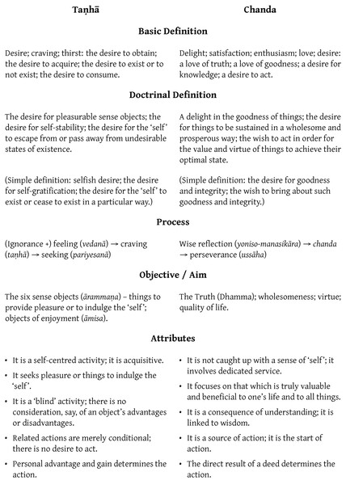

The Buddhist Teachings on Desire

Introduction
People sometimes express the following doubts and criticisms about Buddhism:
’Buddhism teaches one to abandon craving and to be free from desire. If people are without desire and don’t seek personal gains and wealth, how can the nation develop? Buddhism opposes progress.’
’Nibbāna is the goal of Buddhism and the practice of Dhamma is for reaching Nibbāna, but Buddhists should not desire Nibbāna, because if they do then they have craving and their practice is incorrect. If people have no desire, how can they practise? Buddhist teachings are contradictory and they teach to do the impossible.’
These doubts and criticisms seem to touch upon the entire scope of the Buddhist teachings, from the everyday life of householders to the practice for realizing Nibbāna, from the mundane to the transcendent. But in fact, they do not have a direct bearing on Buddhism at all. They stem from a confused understanding, both of human nature and of the Buddhist teachings.
These misunderstandings are prevalent even amongst Buddhists. They are connected to matters of language and terminology. In particular, people have heard that Buddhism teaches one to abandon taṇhā (’craving’), which is often translated as ’desire’. For whatever reason, they are not able to distinguish between these various terms and end up equating craving with desire; they believe that all forms of desire are forms of craving. Moreover, they believe that Buddhism teaches to abandon all desire – to be devoid of desire.
Furthermore, other Pali terms with similar connotations may have been translated in other ways (i.e. not as ’desire’). When the discussion of desire comes up, people may then forget to refer to these other terms for comparison.
For a clear understanding of Buddhism, this misunderstanding needs to be rectified. To begin with, craving (taṇhā) is a form of desire, but not all desire manifests as craving. There exists a positive form of desire, which is essential for Dhamma practice and spiritual cultivation.
Before examining this subject in more detail, let us examine some of the mechanisms of human activity. {972}
Mechanisms of Human Activity
One doubt frequently expressed is based on the belief that people’s actions must always be accompanied by desire; people act according to desire. If there were no craving or desire as a catalyst, people would not act. Surely, they would remain inert, listless, and apathetic.
To begin to reply to this doubt, all human actions, even the action to refrain from acting, requires some movement or activity in the mind. To be alive entails such movement and activity. Here, we can examine the mechanisms functioning behind such activity.
Human beings are not like the leaves and branches of trees, which sway in the breeze, affected solely by external conditions. Humans act prompted by internal conditions. When the physical body is healthy and ready for activity, the mind begins to be aware of what lies in front and behind, above and below, nearby and far away, along with the surrounding location of various objects. In short, one has an understanding of the possible avenues for movement and activity.
With this initial understanding, one must then decide which direction to move and how to act. The mental factor that controls or dictates this decision-making process is intention (cetanā).
Here, in this process, intention is affected by an impetus or motivation, which one can call ’desire’. When one desires to go somewhere, obtain something, or perform an action, intention chooses to fulfil this desire.
What is desire? On a basic level, desire stems from likes and dislikes. Whatever agrees with one’s eyes, ears, tongue, mind, etc., one wishes to obtain and consume. Whatever is disagreeable to the senses one wishes to escape from or get rid of. Intention makes decisions according to these likes and dislikes. This form of desire, based on preferences and aversions, is referred to as ’craving’ (taṇhā).
In sum, there are various factors involved in this activity: knowledge (paññā; ’intelligence’, ’wisdom’) helps to reveal and discern the various objects in one’s surrounding environment; craving (taṇhā) wishes to obtain or get rid of particular objects; and intention (cetanā) chooses to act according to these desires.
Yet there is another element to this process. Living beings possess deeper, more fundamental needs and desires when it comes to action or non-action. They wish to exist, to survive, to be safe, to be healthy and happy, and to live in an optimal state. They wish to exist in a state of fulfilment.
Here one may ask whether such fulfilment is found by merely relying on a knowledge of one’s surrounding sense objects, a craving to either consume or evade such objects, and an intention which propels actions in accord with the whispered suggestions by this very craving. {973}
Wisdom itself will answer that this is not enough. If one encounters some food that has been made to look appetizing by adding various chemical colorants, craving will want to consume it. But if one indulges craving, it is as if one drops poison into one’s food and one will suffer from obesity or some other ailment. This knowledge is insufficient and untrustworthy. It may claim to be wisdom (paññā), but in fact it is merely an expression of not-knowing (aññāṇa), i.e. of ignorance (avijjā).
Take the example of a student:
Counterfeit wisdom may say, ’Not far from here is a place of amusement and entertainment where one can really be wild and unconstrained.’ Craving, wishing to have fun, then grabs hold of this appealing prospect. It whispers, ’Don’t go off to school and tax yourself listening to some tiring subject.’ It then prods intention, which decides to skip school and engage in some form of excess or debauchery.
When wisdom has been developed as true understanding, besides being aware of one’s surroundings, one also knows how to bring about goodness, proficiency, and happiness. One knows what is beneficial and what is harmful, what to promote and what to avoid. One has an understanding of causes and effects, knowing that specific actions will have both short-term and longterm consequences.
In the case of the student, he knows that if he goes off to a place of vice and indulgence, he will only derive momentary pleasure, but in the long run his body, his family, and his intelligence will suffer. If, on the other hand, he perseveres in his studies all aspects of his life will improve.
Craving acts as the agent, hankering for this and that, while this bogus wisdom only has a dim understanding of these proceedings. Craving grabs hold of agreeable aspects and tells intention to seek gratification. This cycle, however, will never lead to true wellbeing.
When wisdom appears, it knows that following the stream of craving will lead to eventual danger and affliction, and the mechanism of ignorance-craving-intention is interrupted or abates.
Wisdom investigates and discerns the interrelationship between things. It knows, for instance, that happiness is based on good health. It recognizes that, in order to maintain good health, one should eat certain foods, exercise, set up a certain environment, maintain certain daily routines, cultivate the mind, allocate one’s time well, etc.
These things recommended by wisdom are of no interest to craving, which only seeks personal gratification, delight, ostentation, and distinction. And anything that is irritating or offensive, it wishes to escape from or eliminate.
It may appear that without the enticements by craving, there is no alternative motivating force prompting intention and instigating actions suggested by one’s understanding of surrounding circumstances. The functioning of life is impeded.
Yet there exists an alternative motivating force. In this context, people possess another innate need or desire. In everyday life, however, sense impressions by way of the five senses (eye, ear, nose, tongue, and body) tend to stand out. When one encounters a sense impression and feels either comfort or discomfort, delight or aversion, these feelings take precedence, leading to liking and disliking. {974} This is the path of craving. Craving wishes to acquire those things that are agreeable and to evade or eliminate those things that are disagreeable. Intention then steers life in this direction. If one leads a shallow or superficial life, resembling the life of an animal, one may aimlessly follow the promptings of craving until one’s dying breath.
For human beings, however, who have the potential for excellence and distinction, craving is not the sole motivating force. As mentioned above, we possess a more profound need or desire, namely: the desire for goodness, for a healthy life, for righteousness, for true and lasting happiness, and for fulfilment and integrity. This wish does not extend only to ourselves. Whatever one encounters and engages with, one wishes for that thing to reach its optimal state of completeness. And this wish is not a detached sentiment; one also wishes to actively help bring about this fulfilment and completeness.
This alternative motivation, which is inherent in everyone, is referred to in Pali as chanda (’wholesome desire’, ’wholesome enthusiasm’).
Here, the direction of one’s life changes course. One begins to develop the quality of one’s life. Wisdom (paññā) discerns what is harmful and what is beneficial in one’s surroundings, and recognizes the path to true fulfilment. Wholesome desire (chanda) aspires to this fulfilment and wishes to bring it about. And intention (cetanā) initiates the effort to move in this positive direction.
When people develop themselves in this way, the cycle of ignorance-craving-intention (avijjā-taṇhā-cetanā) is loosened or weakened. This cycle may also be referred to as ignorance-craving-unwholesome action (avijjā-taṇhā-akusala kamma).
It is replaced by the sequence of wisdom – wholesome desire – intention (paññā-chanda-cetanā), or wisdom – wholesome desire – wholesome action (paññā-chanda-kusala kamma), which eventually develops into the way of life of awakened beings.
When true wisdom comes to the fore, counterfeit wisdom (i.e. ignorance) retreats. Those things recommended by wisdom for promoting health and wellbeing are likely to be disagreeable in regard to craving. Craving likes to be indulged by ignorance. When wisdom appears, craving cannot sustain itself. This is where wholesome desire has an opportunity.
When wisdom points out that true fulfilment is possible, and that specific things are valuable for one’s life and should be cultivated, wholesome enthusiasm (chanda) takes over this matter from wisdom. It then persuades intention to direct the necessary actions to reach such fulfilment.
In sum, there are these two distinct kinds of desire: craving (taṇhā) and wholesome enthusiasm (chanda).
There is another important element to this process. In the cycle of ignorance and craving, as soon as a feeling of pleasure or displeasure arises, along with the desire to obtain or consume, a sense of self appears to act as the delegate or representative. A ’consumer’ or ’owner’ is born. This then creates the duality between such a consumer or owner and those objects desired and consumed. (Following on from this is the arising of a sense of ’you’, of ’him’, ’of them’, etc, who threaten, obstruct, compete, etc.) {975}
On a deeper level, one wishes for this so-called self to be stable, so that one can continue to consume things. And one wishes for it to be powerful, so that one is ensured of obtaining and consuming things to the greatest degree, without any interference. At the same time, if one encounters unpleasant, undesirable things, one wishes to escape from or eliminate them. And if one finds the situation unendurable, one may react by desiring some form of self-annihilation.
The dual process of wisdom and wholesome desire is the opposite. The desire for things to exist in the optimal state of goodness and integrity requires no sense of self to intervene. There is no need for an owner, a consumer, a desirer, etc. One acts simply in accord with nature.
To sum up once again, there are these two kinds of desire acting as motivating forces for people to act:
-
Craving (taṇhā): the desire to consume and to acquire; the desire for self-gratification; the desire for oneself to exist or not exist in some particular way; selfish desire.
-
Wholesome desire (chanda): the delight in witnessing the fulfilment and integrity of things; the desire to help bring about such fulfilment; the desire for things to be complete in themselves.
Wholesome desire includes the wish for self-fulfilment and self-integrity. For example, one wishes for one’s body to exist in a state of good health. In this case, one wishes for the various organs of the body to exist in their own natural state of wellbeing. (How does this desire compare with the craving for physical beauty and attractiveness? This question invites the wise inquiry from discriminating individuals.)
Contrasting Aspects of Craving and Wholesome Desire
Non-action as a Form of Action
As mentioned above, people act according to their knowledge and understanding, which may simply be at the level of responding to sense stimuli, or it may develop into true wisdom, which is able to determine what is appropriate and inappropriate.
In many circumstances, however, instead of initiating an action, people pause, baulk, or stop short. In this case, the hesitation, passiveness, or inaction is a form of action, and it may be a potent form of action at that. As will be explained below, craving (taṇhā) initiates actions that are prerequisites for acquiring objects of gratification or for protecting the stability of one’s cherished sense of self. Here, the term ’action’ includes non-action.
There are many reasons why craving may initiate non-action. For example, one may refrain from acting because by acting one would be deprived of some pleasure that one is currently experiencing, or because one would encounter some kind of trouble or adversity.
Even in the case that acting in a particular way would be truly beneficial for one’s life, craving may urge one to refrain from acting out of fear of hardship or deprivation. {976}
When people develop wisdom and generate wholesome desire as a motivating force, they perform actions they recognize as appropriate and valuable, even though by acting they will face discomfort and be resisting the urge by craving to refrain from acting. Conversely, craving may prompt acting in order to obtain some pleasure, but wisdom, by discerning that such action will damage one’s quality of life, will urge one to refrain.
When people’s wisdom increases but refined forms of craving remain, these two qualities become intertwined and profit from one another. The behaviour of wise individuals is thus more complicated than that of other people. The important issue here is which factor gains the upper hand: does craving or wisdom direct proceedings?
If one applies continual wise reflection, wisdom takes the leading role and becomes increasingly sharper. It ushers in wholesome desire as the driving force for directing one’s life, to the extent that craving ceases.
Here one can see that by removing the factor of craving from the equation, human actions still proceed. Moreover, they are enriched.
Formerly, one relied on craving to help protect the sense of self. Now, wisdom guides one’s life and paves the way for wholesome desire. As a consequence, one is released from the clutches of craving.
Means and Ends: Craving as a Motivating Force
When one gets to the heart of the matter, one recognizes that craving (taṇhā) in fact is not a genuine motivation for action, because the act itself is not the priority for craving.
As mentioned above, craving desires to consume and acquire things that provide one with pleasure. Wholesome desire (chanda), on the other hand, wishes for true completion and fulfilment of all things with which one engages. This dichotomy provides for complexity in regard to action and non-action.
For example:
Sarah is endowed with wholesome enthusiasm. She sees the interior of a house and wants it to be clean (she wishes for this dwelling to exist in a state of completeness). If it is dirty, she wishes for it to be clean and picks up a broom to sweep the floor. She derives joy and contentment both from sweeping (which is the cause for the desired result) and from witnessing a clean space (which is the direct result from sweeping).
Harry has no interest or delight in cleanliness, but he does have a sweet tooth. His mother suggests that he helps with the chores, but he doesn’t respond. She thus says, ’If you sweep the house, I will buy you some sweets.’ When he hears this, Harry picks up a broom and sweeps. In fact, Harry does not desire cleanliness. He only sweeps because this action is a means by which he can get some candy.
Harry derives no pleasure from sweeping (he may even find it irritating) and he is not determined to do a good job (his mother may need to constantly supervise him). This is because sweeping is the cause for a clean house, which is not the result he desires. {977} His happiness will have to wait until he gets the sweets.
To reiterate, craving does not desire the thing or state that is the direct result of an action. Craving urges action only in the case when it is a necessary prerequisite for obtaining desired objects. If there is another way to obtain the desired objects without needing to make effort, craving will prompt one to avoid acting and choose the path of inaction instead. Craving is more often a motivation for inaction than it is for action.
When craving leads to an avoidance of action, it may manifest in the form of laziness, whereby one clings to pleasurable sensations. Alternatively, it may manifest in the form of fear, say by being afraid of encountering some form of discomfort while performing an action or being anxious of losing self-importance.
When inaction is needed for craving to get what it wants, that is, increased sensual pleasure or reinforced self-importance, craving urges such inaction, without considering whether positive effects derived from acting may be forfeited.
Here are more examples: a child refuses to go to school because he knows that his mother will then increase his allowance for sweets (this is a clear case of inaction being a potent form of action); a man finishes work early in order to drink alcohol and gamble; someone receives a bribe in order to refrain from work that should be done; out of laziness, one pays someone else to do some tasks that one should attend to oneself. In this case, one forfeits the satisfaction and delight that is connected to the fruits of one’s own labour.
Positive action is initiated by wholesome desire (chanda) stemming from wisdom, which recognizes what is truly valuable and what should be done. Wisdom rouses wholesome desire for bringing these things to completion.
Even in the case when craving initiates action, there are perils, because the preconditions mentioned earlier establish the following equation: craving urges action out of delight for the pleasure derived from such action. The more one acts the more pleasure one receives; the more pleasure there is the more one desires; the more one desires the more one acts. In many occasions people keep acting until the positive results of these actions are squandered.
Wholesome desire, on the other hand, initiates action out of delight for its positive and wholesome effects. The more one acts the more these positive effects increase and the more delight one experiences; the more delight one has the more one acts. One continues acting until the goodness and integrity reaches completion. The action fully corresponds with its objective.
In sum, craving more often than not urges inaction, and even when it initiates action, these actions are hazardous and lead to more harmful effects than beneficial ones. One should thus abandon craving and, instead, foster wisdom and cultivate wholesome desire. {978}
Formal Basis for the Principles of Desire
Linguistic Analysis of the Term Chanda
As mentioned earlier, the confusion surrounding the meaning of desire, which is viewed in an overly restrictive sense by associating all desire with craving, stems from an erroneous and inadequate understanding of some key Pali terms.
There are many Pali terms denoting desire, and some of these terms are complex both in terms of their definitions and how they are used in speech and writing. This complexity invites confusion.
First, let us distinguish and clarify some of these difficult terms.
The Pali word which is used in both a general sense, covering the entire spectrum of desire, and in a technical sense, referring specifically to wholesome desire, is chanda.
Chanda may be translated in many different ways, including: will, desire, delight, enthusiasm, zeal, contentment, satisfaction, aspiration, yearning, wish, love, and passion. At this point, let us simply refer to it as ’desire’.
Drawing from different sources, the commentaries mention three kinds of desire (chanda):1
-
Taṇhā-chanda: desire as craving (taṇhā); unwholesome desire.
-
Kattukamyatā-chanda: the desire to act; the wish to act. Occasionally, this term is used in a neutral sense, applicable to both wholesome and unwholesome contexts, but generally it is used in a positive, wholesome sense.
-
Kusaladhamma-chanda: desire for virtuous qualities; wholesome desire for truth. It is often abbreviated to kusala-chanda (love of virtue; aspiration for goodness) or dhamma-chanda (love of truth; aspiration for truth).
Taṇhā-chanda:2 the term chanda in this context is a synonym for craving (taṇhā), in the same way as the terms rāga (’lust’) and lobha (’greed’).3 This form of chanda is found frequently in the Pali Canon, including in the term kāma-chanda (’sensual desire’), which is the first of the five hindrances (nīvaraṇa) and is equivalent to kāma-taṇhā (’craving for sensuality’).4 {979} Chanda in this context is usually used on its own, but sometimes it is used together with synonyms, for example in this passage by the Buddha:
With the relinquishment of desire (chanda), lust (rāga), delight (nandi), craving (taṇhā), and clinging (upādāna) … regarding the eye, forms, eye-consciousness, and things cognizable through eye-consciousness, I have understood that my mind is liberated. (This passage refers to all six sense bases.) (See Note Synonyms of Desire)
M. III. 32.
Because chanda in this context is identical to taṇhā, it is possible to replace the term chanda with the term taṇhā in the following passages: ’a desire for existence’,5 ’a desire for sense pleasures’,6 ’delight for the body’,7 ’love of sexual intercourse’,8 ’delight in the body and feelings, which are impermanent, unsatisfactory, and insubstantial’,9 and ’desire for sounds, smells and tastes, which are impermanent, unsatisfactory, and insubstantial’.10
Compound words are created with chanda in a similar way to taṇhā, for example: rūpa-chanda (’delight in forms’), sadda-chanda (’delight in sounds’), gandha-chanda (’delight in smells’), rasa-chanda (’delight in tastes’), phoṭṭhabba-chanda (’delight in tactile objects’), and dhamma-chanda (’delight in mental objects’).11 Chanda can be used in the context of human relationships,12 referring to love or affection, as is seen in the Gandhabhaga Sutta, where it refers to love for one’s wife and children.13 In this same sutta it states: ’Chanda is the root of suffering,’ in the same manner as the second noble truth, which states that craving is the cause for suffering. In another sutta the Buddha says that one should abandon chanda (for things that are impermanent, dukkha, and not-self),14 in the same way that in the Dhammacakkapavattana Sutta he says that one should abandon craving.15
The commentaries generally classify chanda, rāga, nandi, and taṇhā as synonyms for one another, but in some necessary cases a distinction is made according to the intensity of desire.
For example, chanda is described as a weak form of taṇhā or a weak form of rāga, but when it arises frequently it becomes an intense form of craving or greed.
Similarly, chanda is a weak form of lobha, but when desire intensifies and leads to infatuation, it is classified as rāga, and when it further intensifies it becomes acute greed (chanda-rāga).
See: DA. II. 499; AA. IV. 190; SA. III. 64; VinṬ.: Verañjakaṇḍavaṇṇanā, Paṭhamajjhānakathā; VismṬ.: Pathavīkasiṇa-niddesavaṇṇanā, Paṭhamajjhānakathāvanṇṇanā. Verañjakaṇḍavaṇṇanā, Paṭhamajjhānakathā; VismṬ.: Pathavīkasiṇa-niddesavaṇṇanā, Paṭhamajjhānakathāvanṇṇanā.>
Kattukamyatā-chanda: the desire to act. This form of desire is equivalent to the group of mental factors (cetasika) classified in the Abhidhamma as ’miscellaneous’ or ’apportioned’ (pakiṇṇaka-cetasika), that is, they can arise in both a wholesome mind state and in an unwholesome mind state.16
The kattukamyatā-chanda most familiar to students of Buddhism is the desire or enthusiasm (chanda) classified as the first factor in the Four Paths to Success (iddhi-pāda),17 and which is also the essential quality in the Four Right Efforts (sammappadhāna).18 The meaning of kattukamyatā-chanda is very similar to the meaning of viriya (’energy’), vāyāma (’effort’), and ussāha (’endeavour’). {980} These terms are occasionally used together to complement each other.19 This form of desire is considered an essential factor in Dhamma practice.
The commentaries tend to include this form of desire in the third form, of kusaladhamma-chanda, as if they are one and the same. For example, the desire in the Four Paths to Success and in the Four Right Efforts is classified as both kattukamyatā-chanda and kusaladhamma-chanda.20
Kusaladhamma-chanda: this form of desire is mentioned in one sutta, in which it is the final factor in a list describing the six things that are difficult to encounter in the world.21 It is considered an essential factor for people in order to benefit from the Buddhist teachings or to lead a virtuous life, because although one may have encountered the first five factors, if one lacks a desire for wholesome qualities one will not be able to truly benefit from these other factors:
Monks, the appearance of six things is rare in the world. What six?
The appearance of a perfectly enlightened Buddha is rare in the world;
the appearance of one who teaches the Dhamma proclaimed by the Buddha is rare in the world;
to be reborn in the land of the noble ones is rare in the world;
the possession of unimpaired physical and mental faculties is rare in the world;
the absence of foolishness and dimwittedness is rare in the world; and
a desire for wholesome qualities is rare in the world.
The chanda most frequently referred to in the context of Dhamma practice is desire and enthusiasm as found in the teaching on the Four Right Efforts (sammappadhāna; ’complete effort’):
That person generates desire for the nonarising of unarisen evil unwholesome states; he makes an effort, arouses energy, raises up the mind, and perseveres. He generates desire for the abandoning of arisen evil unwholesome states … for the arising of unarisen wholesome states … for the maintenance of arisen wholesome states, for their non-decline, increase, expansion, fulfilment, and development.
This passage is considered a definition of the Four Right Efforts. Here, wholesome desire (chanda) is designated as the essence or principal ingredient of effort (viriya), which is included in the thirty-seven factors of enlightenment (bodhipakkhiya-dhamma).
The term chanda in other passages related to Dhamma practice has a similar meaning, for example: the desire to fulfil all wholesome qualities,22 the desire to undertake training,23 the desire to develop the faculty of wisdom,24 the desire to abandon all mental impurities,25 and the desire for Nibbāna.26 {981}
Chanda in these cases should be interpreted as both kattukamyatā-chanda and kusaladhamma-chanda: as both the desire to act and the desire for virtuous qualities, or in brief: the desire to do good.27
The Vibhaṅga of the Abhidhamma defines chanda in the Four Right Efforts and in the Four Paths to Success as kattukamyatā-kusaladhamma-chanda:28
-
The Four Right Efforts: In the phrase ’generate chanda’, how is chanda interpreted? Whichever delight, aspiration, desire to act, or wholesome love of truth there is is called chanda.
Chandaṁ janetīti tatha katamo chando? Yo chando chandikatā kattukamyatā kusalo dhammachando ayaṁ vuccati chando.
-
The Four Paths to Success: In the Four Paths to Success what is the path to success of aspiration (chanda-iddhipāda)? At whichever time a monk in this Dhamma and Discipline cultivates the transcendent jhānas (lokuttara-jhāna) … the delight, aspiration, desire to act, or wholesome love of truth at that time is called chanda.
Tattha katamo chandiddhipādo? idha bhikkhu yasmiṁ samaye lokuttaraṁ jhānaṁ bhāveti … yo tasmiṁ samaye chando chandikatā kattukamyatā kusalo dhammachando ayaṁ vuccati chandiddhipādo.
This definition in the Vibhaṅga is the basis for later commentarial interpretations of chanda as a distinctively wholesome quality and is most likely the origin of the convention of combining kattukamyatā-chanda with kusaladhamma-chanda into a single factor.
Chanda as the Root of Suffering and Chanda as the Source of Wholesome Qualities
The Buddha used the single compound term chanda-mūlaka in different contexts, sometimes with opposite meanings: in one case it may refer to a wholesome quality and in another case to an unwholesome quality. It is useful here to examine this discrepancy.
The term chanda-mūlaka means having desire as the root, source, or point of origin. In one context the Buddha states that all forms of suffering have desire as the root, whereas in another context he states that all things have desire as the root. {982}
A. Desire as the root of suffering and of the five aggregates of clinging:
Headman, this matter can be understood in this way: ’Whatever suffering arises, all that arises rooted in desire, with desire as its source; for desire (chanda) is the root of suffering.’
S. IV. 329-30.
That bhikkhu delighted and rejoiced in the Blessed One’s statement. Then he asked the Blessed One a further question: ’But, venerable sir, in what are these five aggregates subject to clinging rooted?’ ’These five aggregates subject to clinging, bhikkhu, are rooted in desire (chanda).’
M. III. 16; S. III. 100-101.
These two passages correspond with one another, as confirmed by the Dhammacakkapavattana Sutta, in which the Buddha states:
’In brief, the five aggregates subject to clinging are suffering.’
S. V. 421.
All of the commentarial and sub-commentarial explanations of the second passage (on the five aggregates of clinging) are consistent, stating that ’rooted in desire’ means ’rooted in craving (taṇhā)’ or ’rooted in covetous desire (taṇhā-chanda)’.29 These texts occasionally confirm that these explanations are consistent with crav-ing (taṇhā) being denoted as the origin of suffering (dukkha-samudaya).
B. Desire as the root of all things:
The Buddha uttered these words: Chandamūlakā … sabbe dhammā, which may be rendered as ’all things are rooted in desire’, ’all things are based on desire’, or ’all things have desire as their source’.
This key phrase by the Buddha is contained in a longer passage, which can be considered a compilation of ten major Buddhist principles. It contains important principles of Dhamma practice and culminates in the highest goal of Buddhism:
Monks, if wanderers of other sects should ask you: ’What, friends, are all things rooted in? … What is their culmination?’ you should answer them as follows:
All things are rooted in desire
(chandamūlakā … sabbe dhammā).All things have attention as their source
(manasikāra-sambhavā sabbe dhammā).All things originate from contact
(phassa-samudayā sabbe dhammā).All things converge upon feeling
(vedanā-samosaraṇā sabbe dhammā). {983}All things are headed by concentration
(samādhippamukhā sabbe dhammā).All things have mindfulness as their sovereign
(satādhipateyyā sabbe dhammā).All things have wisdom as their pinnacle
(paññuttarā sabbe dhammā).All things have liberation as their essence
(vimutti-sārā sabbe dhammā).All things merge into the deathless
(amatogadhā sabbe dhammā).All things culminate in Nibbāna
(nibbāna-pariyosānā sabbe dhammā).30A. V. 106-107.
If you are asked thus, monks, it is in such a way that you should answer those wanderers of other sects.
It is clear that all of these factors are vital in Buddhist practice. Together, they constitute the cultivation of wholesomeness up to the final goal of Buddhism, and these factors are thus all wholesome in themselves. At the very least, they are neutral factors, which may be incorporated in this wholesome framework. For this reason, the term ’desire’ (chanda) here definitely does not refer to an unwholesome quality.
The commentaries explain that ’all things’ (sabbe dhammā) here refers to the five aggregates, i.e. to all conditioned phenomena (saṅkhata-dhammā). (Nibbāna is excluded here as it is the cessation of all conditioned phenomena.)
Note that in the previous section (above) the five aggregates of clinging (upādāna-khandha) are said to be rooted in desire, and that this desire is equated with craving (taṇhā). Here, however, the five aggregates (i.e. not as a basis for clinging) are mentioned.
How do the five aggregates and the five aggregates of clinging differ from one another? The Buddha said that in the case that the five aggregates are a supportive condition for the mental taints (sāsava) and for clinging (upādāniya), they constitute the five aggregates of clinging. If they are free from the taints and from clinging they are the five aggregates in a sheer or absolute sense.31
Many sub-commentarial passages explaining these ten factors explicitly state that wholesome qualities are rooted in desire (chandamūlakā kusalā dhammā): wholesome desire (chanda) is the source of wholesome things. One of these passages defines this desire specifically as the ’desire to act’ (kattukamyatā-chanda), which incorporates the desire for virtuous qualities (kusaladhamma-chanda; this includes the love of goodness – kusala-chanda – and the love of truth – dhamma-chanda).32
Definitive Definition for Chanda
When we have considered the various definitions of the term chanda and thoroughly examined the divergent passages in which it is used, we are prepared to establish a definitive definition for this term. By relying on a mutual understanding of this term we can establish a standard definition for it in the context of Dhamma study.
In brief, the term chanda encompasses all forms of human desire. {984}
Unwholesome, negative chanda is equivalent to the term taṇhā. Because the term taṇhā is familiar to most students of Buddhism, negative desire may be replaced by this term.
Virtuous, wholesome chanda is called kusaladhamma-chanda; it is sometimes abbreviated to kusala-chanda or dhamma-chanda. As negative desire may be referred to as taṇhā, it is simple and convenient to refer to wholesome desire by the single term chanda.
Kattukamyatā-chanda (’the desire to act’) is a neutral form of desire. In most cases this term is used in a positive sense, referring to the desire for virtuous qualities (kusaladhamma-chanda). Therefore, it too may be incorporated into the single term chanda.
Here we can determine to simplify matters by using just these two terms to refer to human desire and motivation:
-
Taṇhā: unwholesome desire (the desire to consume, to acquire, and to obtain).
-
Chanda: wholesome desire (the desire to act; the desire to bring about integrity and fulfilment).
We can feel at ease by making this simple distinction, because it accords with an identical distinction made in the commentaries and later texts.
In many of the texts, when there is a passage relevant to the subject of unwholesome and wholesome desire, an analysis of these qualities is provided. Although this analysis is not always comprehensive, it is clear that the authors of these texts wished to point out the difference between these two kinds of desire. (Note that there is no single passage in which the three aforementioned kinds of desire are clearly listed together.)33 Occasionally, a pair of clearly defined terms is used; the most common distinction is as follows:
-
Taṇhā-chanda: desire as craving.
-
Kattukamyatā-chanda: the desire to act.
There are two commentarial texts which present a clear account of these principles dealing with desire. In the Papañcasūdanī and the Paramatthadīpanī, ’desire’ (here, the Pali term patthanā is used) may be classified into two kinds:34 (See Note Desire as Craving or Action)
-
Covetous desire; desire with craving (taṇhā-patthanā).
-
Wholesome desire (chanda-patthanā).
These commentaries refer to examples from the Pali Canon. In the Buddha’s teaching: For him who still desires, there is obsessive desiring and agitation about those things on which he fixes his attention (Sn. 176), the desire referred to is craving (taṇhā).
In the teaching: I have cut off, destroyed, and cleared the stream of Māra the wicked one; you should greatly rejoice and desire true safety (M. I. 227), the desire referred to is chanda, which is a wholesome quality of desiring to act.
The commentaries also refer to this passage: A bhikkhu who is in higher training (sekha), who has not yet reached the fruit of arahantship, and who is still desiring the supreme security from bondage (M. I. 4). Here too, ’desire’ refers to chanda as a wholesome quality.
These commentarial explanations support the classification of desire into two distinct kinds. {985}
Craving and Wholesome Desire
As mentioned just above, there are two main motivating forces prompting human beings to act:
-
Taṇhā: pleasure, delight, desire, lust, and longing that is unwholesome, unhealthy, and unsupportive.
-
Chanda: pleasure, delight, desire, love, and aspiration that is wholesome, healthy, and supportive.
Motivation of Craving
Taṇhā may be translated as ’thirst’, ’craving’, ’yearning’, ’infatuation’, ’fervour’, ’lust’, ’agitation’, ’anxiety’, or ’insatiability’.35
According to the teaching of Dependent Origination, taṇhā is conditioned by feeling (vedanā) and rooted in ignorance (avijjā). When one receives a pleasurable or displeasurable sense impression – one sees a delightful or loathsome visual form, for example, or hears a melodious or grating sound – and feels either pleasure, pain, or a neutral feeling, craving arises in one form or another. If one experiences pleasure, then one is glad, delighted, satisfied, fascinated, enthralled, and covetous. If one feels pain, then one is displeased, dissatisfied, and averse, and one wishes to escape or wishes for the feeling to disappear. If one feels a neutral feeling then one remains indifferent and complacent.
These reactions occur automatically; they require no thinking or understanding. (On the contrary, if a person reflects on or understands the process, for example if one knows that the loathsome visual object is beneficial or the melodious sound is in fact an alarm signalling danger, or one is aware that the object is unsuitable on the grounds of ethical or cultural considerations, then craving can be severed and the habitual process can be replaced by a new form of behaviour.) Craving is dependent on feeling and is reinforced by ignorance: it ’rests upon’ feeling and is grounded in ignorance.
Because craving is directly tied up with feeling, a person with craving searches for things that will provide pleasing, delightful feelings. There are six distinct things that can provide feeling: visual forms, sounds, smells, tastes, tactile objects, and mental objects.
The first five – sights, sounds, smells, tastes, and tactile objects – are connected to the material world and are particularly pronounced. They are referred to as the five objects of sensual enjoyment (kāma-guṇa).36 The six sense objects, and especially the five objects of sensual enjoyment, are both the aim and the source of craving. Craving is thus a thirst for things that provide sensation and a thirst for pleasing sense objects – a desire for pleasing sense objects in order to experience delightful feelings. (See Note Craving Arising and Ceasing) In brief, craving is the desire to acquire. {986}
To say that craving arises from the six sense objects or from the five cords of sensual pleasure is a concise explanation. A detailed explanation by the Buddha is that craving arises from things that are pleasurable (piya-rūpa) and agreeable (sāta-rūpa), of which there are ten groups of six items: the six internal sense organs, the six external sense objects, the six forms of consciousness, the six kinds of contact, the six kinds of feeling, the six kinds of perception, the six kinds of volition, the six kinds of craving, the six kinds of applied thought (vitakka), and the six kinds of sustained thought (vicāra). Craving is both established at these pleasurable and agreeable things and abandoned and ceases at these things.
D. II. 308-311; S. II. 108-109; Ps. I. 39-40; Vbh. 101-103.
Craving has further repercussions: the experience of contacting sense objects and experiencing feelings gives rise to a mistaken belief that there is a stable, lasting self that experiences these feelings.
Accompanying this belief in a stable, lasting self is a craving for this self to endure. But this biased belief is merely an idea (that is, it is not based in reality), and it tends to generate an opposing belief that inclines in the opposite direction, that the self exists only temporarily, that it is impermanent and will eventually disappear.
These beliefs are connected to the feelings resulting from contact with sense objects: the existence of a self is defined and determined by the experience of pleasant feelings. When a person is gratified by sense contact, the craving for the stability of the self is intensified. But when the person is not gratified by sense contact then the stability of the self loses significance. If the dissatisfaction with sense contact is strong then there arises an aversion for the stability of the ’self’: a person wishes for the self to be separated from the present state of existence or craves for the destruction of the self. This alternative form of craving – for annihilation of the self – goes hand in hand with the belief that the self exists temporarily and will eventually disappear.
These two forms of craving – for stability of the self and for self-annihilation – exist as a pair and lie in juxtaposition to one another.
The first kind of craving – a desire for pleasant sense objects – is also a desire for sense objects to satisfy the ’self’ or a desire for the self to experience pleasant feeling from sense objects.
All forms of craving merge at or serve a sense of self.
People allow these different forms of craving to direct the course of life, by pandering to them, nourishing them, and faithfully obeying them. They are the source of all problems, both personal and social, and they generate expectation, fear, doubt, anger, hostility, carelessness, obsession, and conflict. There are three distinct kinds of craving:
-
Kāma-taṇhā: craving for pleasant sense objects to satisfy a sense of self; craving for sensuality.
-
Bhava-taṇhā: craving for the importance, stability, and immortality of the self; craving for existence.
-
Vibhava-taṇhā: craving for the destruction, escape, or annihilation of the self; craving for non-existence. {987}
In brief, these three kinds of craving may be referred to as craving for sense pleasure, craving for existence, and craving for non-existence.37
According to the Buddhist teaching on the mode of conditionality (paccayākāra), craving leads to ’seeking’ (pariyesanā or esanā, see Note Craving and Seeking): the search to obtain desired objects, which results in acquisition. The acquisition of a desired object marks the end of one stage in the conditional process.
Before examining this process more closely, take note that seeking is not the same as doing, and seeking may not involve any form of physical action, as will be discussed below.
Taṇhaṁ paṭicca pariyesanā: ’with craving as condition, there is seeking’; pariyesanaṁ paṭicca lābho: ’with seeking as condition, there is acquisition.’
(D. II. 58-9; A. IV. 400-401; Vbh. 390-1; cf.: S. II. 143 where craving is expressed as the term chanda).
Pariyesanā can also be translated as ’endeavouring to obtain’ or ’acknowledging’.
At DA. II. 499, AA. IV. 188 and VinṬ.: Parivāraṭīkā, Ekuttarikanayo, Navakavāravaṇṇanā taṇhā is classified as two kinds:
esanā-taṇhā (craving in the search for desired objects) and
esita-taṇhā (craving for things sought after and acquired).
Nd. I. 262 and DA. III. 720 mention five kinds of chanda:
desire in searching (pariyesana-chanda),
desire in acquisition (paṭilābha-chanda),
desire in consuming or using (paribhoga-chanda),
desire in accumulation (sannidhi-chanda), and
desire in distributing (visajjana-chanda: to hand out money or feed people to increase one’s following);
These two passages explain that these five kinds of chanda are all expressions of taṇhā.
Motivation of Wholesome Desire
At this point let us return to the term chanda, which we have defined as desire for wholesome qualities (kusaladhamma-chanda), love of virtue (kusala-chanda), or love of truth (dhamma-chanda).
Kusaladhamma-chanda is translated as desire for wholesome qualities: an enthusiasm for and delight in virtue.38 Kusala-chanda is translated as love of virtue; although the term dhamma is removed, kusala-chanda has an identical meaning to kusaladhamma-chanda.
Kusala may be translated as ’wholesome’, ’skilful’, ’favourable’, ’proficient’, ’healthy’, or ’salubrious’: it refers to things that are beneficial to a person’s life, things that promote wellness and prosperity for an individual and for society. (See Note Definitions of Kusala) {988}
Dhamma-chanda is translated as love of truth or a desire for truth. The term dhamma often has a general meaning, referring to ’thing’ or ’teaching’, but in this context its meaning is more far-reaching.
Here, dhamma has two principal meanings: first, the ’truth’ (or teachings that reveal the truth), and second, ’virtue’ (’goodness’, ’virtuous quality’, and to some extent ’ethics’). Dhamma-chanda can thus be rendered as ’love of truth’, ’love of virtue’, ’desire for truth’, or ’desire for virtue’.
The desire for truth points also towards knowledge: a person wants to know the truth, to realize the truth, to realize the true meaning, true essence, and true value of things.
And the desire for virtue is linked to action: a person wishes to generate goodness.
There are three principal definitions for kusala:
ārogya (an absence of illness; healthy);
anavajja (faultless); and
kosalla-sambhūta (arising from skilfulness; arising from wisdom).
Alternative definitions include:
’resulting in happiness’ (sukha-vipāka) and
’peaceful’ (khema).
See, e.g.: PsA. I. 129, 206; DhsA. 38, 62; DA. II. 645; VismṬ.: Khandhaniddesavaṇṇanā, Viññāṇakkhandhakathāvaṇṇanā. Khandhaniddesavaṇṇanā, Viññāṇakkhandhakathāvaṇṇanā.>
Dhamma-chanda can therefore be translated as ’intent on truth’, ’love of truth’, ’intent on goodness’, or ’love of goodness’. It includes an aspiration for knowledge, a desire to act, an eagerness to act. A simple definition for dhamma-chanda is ’intent on truth’, with the understanding that all the aforementioned explanations are included in this definition. In a similar fashion, the term chanda on its own can also be translated as ’intent on truth’.
Chanda desires truth and virtue; it desires a knowledge of truth; it desires to act in order to give rise to goodness and to produce truly beneficial results. Chanda is thus related to action, specifically action performed in order to know the truth and to create goodness.
Why is it that when wholesome desire (kusaladhamma-chanda) is mentioned in the texts, it is usually linked to the desire to act (kattukamyatā)? The desire for knowledge and goodness solicits action. In order to arrive at knowledge, truth, and fulfilment, one must act. To use a play on words, to access the real one must have zeal.39
For this reason, the desire to act is an attribute of wholesome desire or the love of truth. One can even say that the term chanda is a synonym for kattukamyatā: the desire to act is wholesome desire. Sooner or later, when the texts mention wholesome desire (kusala-chanda) or the love of truth (dhamma-chanda), they normally conclude by stating that chanda is equivalent to the desire to act (kattukamyatā-chanda).
In reference to the mode of conditionality (paccayākāra), the Buddha said that chanda leads to perseverance (ussāha),40 or he mentioned chanda as preceding effort (vāyāma) or energy (viriya).41 Put simply, chanda generates action (just as taṇhā generates seeking).
Related to this subject, the commentaries say that the cause of wholesome desire (chanda) is wise reflection (yoniso-manasikāra).42
This passage indicates that wholesome desire is part of a conditional process involving wisdom. Wholesome desire commences when a person begins to apply wisdom (just as the arising of craving depends on ignorance). {989}
Comparative Analysis
To sum up:
-
Craving (taṇhā) is focused on feeling (vedanā) and desires objects in order to experience feeling, or desires objects for personal gratification. Craving is generated and sustained by ignorance; it is linked to personal issues – it centres around a sense of ’self’. It leads to seeking.
-
Wholesome desire (chanda) is focused on wellbeing, on what is truly beneficial and on the quality of life; it desires truth, goodness, and virtue; it desires fulfilment and wholeness. Chanda is generated from wise reflection; it is objective – it is not bound up with a sense of ’self’; and it leads to energy, effort, and action.
There are two points here requiring special emphasis:
-
When analyzing whether a person’s actions (including thoughts and speech) are dictated by craving or not, one can use the following criteria: desires or actions that are tied up with a search for gratifying sensations, that protect or promote the stability of a fixed sense of ’self’ (including on a deeper level the undermining of the ’self’), are matters that fall under the category of craving.
-
The passages ’craving leads to seeking’ and ’chanda leads to action’ are very helpful in distinguishing between these two qualities. This distinction has a crucial bearing on ethics and on Dhamma practice, which will be discussed below.
Craving desires things in order to experience feeling, and the gratification of craving is achieved through the acquisition of these things. Any method used by craving to acquire gratifying objects is referred to by the term ’seeking’ (pariyesanā). The methods for acquiring these things vary: some methods require action while other methods (for example someone else provides the object) do not require action. In the case that action is required, however, the object desired by craving does not have a direct causal relationship to the action. For example:
’Mr. Gully is a janitor and gets a monthly salary of $300.’
’If you finish reading this book Daddy will take you out to the movies.’
Many people will think that janitorial work is the cause for receiving the salary: cleaning is the cause and the salary is the result. Such a conclusion, however, is false; it stems from an habitual and self-deceptive way of reasoning.
For the statement to be accurate one must insert missing clauses: the action of cleaning results in a clean building; a clean building is the true result of cleaning. Receiving a salary for cleaning is merely the result of an agreement made by certain individuals. There is no certain causal relationship between these two events: some people who clean buildings receive no money and most people receive a salary without having to clean buildings.
The second example is similar: many people will think that reading the book is the cause and going to the movies is the result, but in fact the true result of reading a book is the gaining of knowledge. To finish reading the book is merely a condition for going to the movies. {990}
In the first example, if Mr. Gully’s behaviour is compelled by craving, then he cleans only because cleaning is a requirement for getting money. He does not desire a clean building and he does not want to sweep and clean.
In the second example, the child wishes to go to the movies and she reads the book only because it is a condition for getting the object desired by craving: to see a movie. She does not desire the knowledge contained in that book and she has no wish to read the book.
Strictly speaking, craving does not lead to action nor does it generate a desire to act. In these cases, action is merely one possible method (following a pre-arranged agreement) used for attaining sought-after objects according to the needs of craving.
These two examples also clarify the quality of chanda, which desires virtue, truth, and knowledge of the truth.
With chanda, Mr. Gully would desire a clean building and the child would desire the knowledge from the book; both individuals desire the direct results of these actions. The results ’appeal to’ the causes: the results help determine the course of action. Action is equivalent to generating desired results; cause and effect are intimately linked. When Mr. Gully sweeps, cleanness arises, and it arises every time he sweeps. When the child reads, knowledge arises, and it continues to arise the more she reads.
Chanda desires the virtue resulting from action, and thus also desires the action itself, which is the cause for that virtue.
In this sense, chanda leads to action and leads to a desire to act. This helps to explain why the second kind of chanda (kattukamyatā-chanda – the desire to act) is equated to kusala-chanda or dhamma-chanda (the desire for virtue or truth).43
If behaviour is guided by chanda, Mr. Gully will have an enthusiasm for sweeping the building that is distinct from receiving a salary, and the child will read the book without her father’s enticement to see a movie. There are many other ethical implications to these two forms of desire, but at this point simply remember the distinction that craving is the desire to consume or experience, while chanda is the desire for truth and action.
Problems Arising from a Set of Preconditions
The ethical or practical consequences of using either craving or chanda as a motivation for action vary greatly.
When a person uses craving as the motivation, action is merely a prerequisite for obtaining desirable objects in order to satisfy the sense of ’self’. The person does not directly desire the action or the results of the action; his or her direct aim is to obtain the desired objects.
In many instances the required action is merely one method of obtaining the desired objects.
Therefore, if one is able to find a method of obtaining these things without having to act, one will use this method and avoid doing anything, because obtaining the desired objects without having to work is most compatible with craving.
And if it is impossible to avoid action then one will act reluctantly, unwillingly, and without real enthusiasm. {991}
The consequences of craving are as follows:
-
When one tries to avoid having to perform the prearranged action, one may seek a shortcut or an easy alternative to acquire the desired object without having to work. This avoidance may even lead people to behave immorally. For example, if Mr. Gully wants money, has no enthusiasm for or dedication to his work, and feels he cannot wait, he may seek money by stealing. If the girl cannot put up with reading the book, she may steal money from her mother and go to see the movie alone rather than wait for her father to take her.
-
When one craves to acquire and has no desire to act, one will perform required actions simply to get them over with, act in a hasty fashion, or act to convince others that one has accomplished the deed. The result is a lack of precision and excellence in one’s work. And one will develop bad habits like disinterest in achievement, negligence, and half-heartedness. For example, Mr. Gully may joylessly sweep day in and day out, waiting for his salary. The girl may read the book in a distracted way without gaining any knowledge or deceive her father by reading only the first, middle, and final page and claim she has finished it.
-
When the original agreements have been breached, there arises underachievement, carelessness, avoidance, and deception. As a consequence, strict secondary preconditions need to be established for support and protection. But this is only attending to symptoms, making the entire system more complicated and confusing. For example, it may be necessary to find a supervisor and inspector for Mr. Gully’s work and verify the hours he has spent working. It may be necessary to have an elder sibling check on the girl or else the father may need to cross-examine her on the book’s content.
When craving dictates behaviour in response to these secondary terms and conditions, new layers of faulty and immoral conduct arise until the entire system becomes disrupted or useless.
-
When the desired object differs from the direct result of an action, then the value of the action cannot be measured by its result because the action is being performed to serve some other goal. In such a case, there is an imbalance between the action and desired results. The behaviour of people who aim for desired objects expected under the terms of an agreement is likely to be either excessive or deficient, and is likely to be inadequate for realizing the beneficial, virtuous results stemming directly from that action. People then determine the value of the action by the acquisition of desirable objects.
The basic rule for action performed as a prerequisite for acquiring desired sense objects, or the distinctive rule of craving, is: ’The more I obtain desirable things, the more I act’, or: ’The more I experience delightful feelings, the more I act.’ Action based on this premise is never-ending and possesses a flip side of: ’If I don’t acquire desirable objects, I won’t act’, or: ’If I don’t experience delightful feelings, I’ll remain idle.’
Apart from being defective and a missed opportunity, action that is performed for results differing from its direct, beneficial results also creates negative effects. A simple example is that of eating: when a person eats purely with craving, then if the food is delicious he will eat till he is bloated; if the food does not appeal to his desires then he will eat too little, leading to discomfort and sickness. (The action is eating, which results in adequate nourishment for the body and is a prerequisite for experiencing delicious tastes.) {992}
The negative effects of craving are widespread as will be discussed in further examples below.
-
In the case that action and the things desired by craving are not directly aligned by cause and effect, craving is averse to action and resists work. Craving attempts to avoid work by trying to obtain things through no effort at all, and when it is essential to act, then people act begrudgingly. People acting with craving (following prescribed terms and conditions) tend to find no joy or satisfaction, either in the action itself or in the fruits of their labour.
The things desired by craving abide virtually in isolation, disconnected from the deed. As long as one does not acquire the desired objects, the craving for these things remains. And acting to fulfil certain preconditions may further incite craving, leading to disturbance and anxiety.
The state of mind of someone who acts with craving is restless, confused, stressful, and nervous, and is often accompanied by other unwholesome qualities like fear, distrust, and envy.
A lack of fulfilment and dissatisfaction can lead to severe personal problems, like stress and mental illness. When these problems extend outwards, they create difficulty for one’s life in general and cause affliction for others.
Benefits of Wholesome Desire
People who apply wholesome desire (chanda) as the motivation for action, on the other hand, wish for the direct results of actions, and therefore they also want to act. The consequences of wholesome desire are opposite to the consequences of craving:
-
Wholesome desire leads to upright behaviour, diligence, and honesty, to sincerity in relation to one’s work, and to a steadfast allegiance to the natural law of causality.
-
Wholesome desire creates an enthusiasm for work; it leads to precision and excellence in relation to one’s work, to a wish for success, to earnest endeavour, and to being undaunted by work.
-
Instead of a complicated system of control and mutual fault-finding, there is cooperation and a coordinated effort between people, because each individual wishes for the success of the work rather than yearning for personally gratifying objects which are scarce and must be competed for.
-
Because the action is performed for its own direct results, the value of the action can be measured by its results. There is a balance between the action and desired results: a person acts in order to give rise to beneficial results. For example, one eats the proper amount to meet the needs of the body and to promote health, without being enslaved by delicious flavours. {993}
-
When one desires the direct results of an action and wants to generate these results, one also realizes the intermediate benefits that arise during the course of action. The wish to act and the reaping of benefits from action leads to satisfaction, contentment, happiness, and a deep sense of peace.44
In the context of Dhamma practice, chanda is classified as one of the ’paths to power’ (iddhi-pāda), which is a vital principle for the development of concentration (samādhi). Wholesome desire brings about concentration, which the Buddha called ’concentration as a result of desire’ (chanda-samādhi).45 Wholesome desire promotes mental health, as opposed to craving, which creates mental illness.
Even in the case when a person is unable to fully accomplish the results of an action, wholesome desire does not create suffering or mental problems. Whether the action bears fruit or not, it proceeds according to cause and effect: the effects are consistent with the causes; the causes along with any obstructing conditions naturally give rise to specific results. Wholesome desire does not create suffering because those people who act with such desire have an understanding of causality and recognize the direct results of their actions.
Suffering only arises when craving is given the opportunity to interfere, for example when one worries that people will be critical for not succeeding or one compares one’s accomplishments with the success of others. (See Note Thinking as Conceit)
The Act of Eating Subject to Preconditions
Following are some everyday examples of these principles:
When the body is underfed then it requires food for nourishment and for sustaining life. The need for food manifests as hunger, which we can distinguish as the first stage in the act of eating. Hunger is a function of the physical body and is classified as a result (vipāka). From the perspective of ethics, it is neutral: neither good nor bad, neither wholesome nor unwholesome. Even arahants experience hunger.
This form of thinking falls under the category of ’conceit’ (māna), but craving here must also be firmly established: there must be a desire for the stability of the ’self’, which is connected to the conceit and wish to be recognized as a ’success’.
See the passage at Paṭ. 205, which states that the fetter of conceit (māna-saṁyojana) is dependent on the fetter of greed for existence (bhavarāga-saṁyojana); it arises due to causes and conditions. (It is most likely that important parts of this passage have been lost, as confirmed by the complete passage referred to at VismṬ.: Khandhaniddesavaṇṇanā, Saṅkhārakkhandhakathāvaṇṇanā.)
The Abhidhamma states that the proximate cause (padaṭṭhāna) of māna is greed (lobha), and that māna only arises in a mind that is rooted in greed (lobha-mūla) or accompanied by greed (lobha-sahagata).
Put simply, conceit is a consequence of craving.
See: Dhs. 247; Comp.: Cetasikaparicchedo, Akusalacetasikasampayoganayo; CompṬ.: Cittaparicchedavaṇṇanā, Akusalacetasikasampayoganayavaṇṇanā; Vism. 469. Akusalacetasikasampayoganayo; CompṬ.: Cittaparicchedavaṇṇanā, Akusalacetasikasampayoganayavaṇṇanā; Vism. 469.>
Hunger is a stimulus. It prompts the act of eating, and it conditions the behaviour of eating: if one is very hungry one eats a lot; if not very hungry, one eats less. {994}
Hunger, however, is not the sole conditioning factor for eating; there are other reasons why people eat.
At the second stage of eating, for ordinary, unawakened beings, another incentive or motivation comes into play and determines behaviour along with hunger: the force of craving.
There are two kinds of craving that manifest at this stage: first, is the struggle to protect the security of the ’self’ (the craving for existence – bhava-taṇhā), which is obvious in times of great hunger or starvation. Craving generates anxiety, agitation, and a fear of death, accompanying the normal discomforts of going without food. The stress and fear will be commensurate to the degree of craving. At this point the person seeks food. When craving directs behaviour, the search for food tends to be desperate and disregards ethical considerations. (See Note Seeking and Craving)
The second kind of craving is the craving for sense pleasures (kāma-taṇhā): the hunger for delightful sensations. The craving for sense pleasures combines with physical hunger to condition behaviour, either as a support or as an obstruction. This is similar to two people who are in competition for material gains; if both gain, they help each other; if only one party gains, they are in conflict.
If hunger is the sole factor, then the degree of hunger determines the amount of food a person eats; if craving is the sole factor, then the degree of delicious flavours determines the amount of food consumed.
This, however, is only a hypothetical argument: usually, craving never allows hunger to be the sole determining factor. Craving almost always intervenes, and when hunger and craving exist as co-determinants, hunger obliges craving, by helping to enhance the experience of delicious flavours. But hunger can only help to a limited extent; it cannot always accommodate the desires of craving. {995} As a consequence, a person may be very hungry but the food is not tasty and he eats too little, or he is not hungry but the food is delicious and he overeats; or he is only a little bit hungry and the food is not tasty, so he refuses to eat anything.
Hunger is a warning, announcing the body’s requirements. When a person eats to satisfy hunger then the body receives adequate nourishment; the direct result of eating is nourishing the body. But when a person eats with craving – eats to experience delicious flavours – then he sometimes eats too little and other times too much, which can harm the body.
In the case of craving, tasting delicious flavours is dependent on the act of eating, but it is not a direct result. Eating is the direct cause for nourishing the body but it is a prerequisite for the gratification of craving.
People may raise the question that if the act of seeking stems from craving, then does this mean that someone without craving needs not seek food?
The Pali word pariyesanā (’seeking’) is used to define all methods applied for acquiring desired objects. It has a broad meaning, including methods that require action and methods that do not require action. ’Seeking’ here is distinguished from pure action. Whenever seeking is directly linked to its results then it is merely an action in the ordinary sense.
For instance, in the above example, the body requires food for sustenance and good health. Seeking is an immediate cause for obtaining required nourishment, and is thus an action performed for its own direct results.
The distinguishing factor is the reason for eating. If a person eats in order to experience delicious flavours, then the process of cause and effect becomes imbalanced. But if a person eats to meet the body’s requirements, the causal process is unified. A person without craving applies reasoned judgement and understanding, reflecting on the need for food to sustain life and to perform good deeds.
In Dhamma practice, if one’s conduct is based on this kind of reasoned reflection, then one considers the search for food through righteous means to be a responsibility and puts forth effort. Even bhikkhus, who should sustain life with only the minimum requirement of food, endeavour to find food following their own custom and tradition.
See: Vin. I. 57-8, 96: these passages reveal another perspective on the distinction between seeking that is a responsibility and pure action, and seeking that is simply a search for sensual experience without needing to act.
Craving does not necessarily want to eat nor is it particularly interested in the needs of the body. Craving only wants delicious flavours; eating is merely a requirement to obtain these flavours and there is no other option but to eat.
The tastier the food, the more one eats; one does not consider the body’s needs and limitations. Similarly, if the food does not taste good, one refuses to eat. Moreover, one may feel that the entire process of chewing and swallowing is troublesome, disagreeable, and exhausting. In this case the body is a recipient of the act of eating, but without the person necessarily intending to nourish the body.
Figuratively speaking, the living body is one party in a discussion, while the person eating with craving is another party. When the body is undernourished, it requires food, but it cannot eat on its own; it relies on the person to provide it with food. When people are inattentive to the body’s needs or only grudgingly take an interest in a proper diet, the body suffers. Occasionally, when the body is famished, it must complain and grumble in order to get people’s attention. When the body sends the slightest sign of distress, people hasten to eat.
The body looks for ways to entice people to eat, by offering the reward of experiencing delicious tastes. Sometimes the body is not hungry and does not send any signal of discomfort, but people come across delicious food and eat more than the body requires.
Eating has implications for both parties: for the body, eating results in rejuvenation, while for the person, eating results in obtaining delicious flavours.
(In fact, most people do not want to eat; they only want to experience delicious tastes. If someone were required to eat two plates of insipid food, he would have to force himself to do so, but if the food were delicious then he may not be able to wait for the third plate to arrive.)
When the body offers an incentive for people to eat, it simply waits; people will eat delicious foods from their own initiative and the body obtains required nourishment accordingly. {996}
This method of enticement by the body, however, can be harmful and backfire. If one lacks the ability to consider and reflect, one may be utterly deceived by the body and only search for desirable flavours; as a consequence the body suffers. Sometimes one does not eat enough because the food is not delicious; sometimes the food is tasty and one not only eats more than is necessary, but overeats to the extent of causing illness.
The act of eating then does not provide the suitable result of attending to the body’s needs. Moreover, those people who are enticed by delicious flavours often create trouble and distress for other people.
Procreation and Sensual Pleasure
A similar subject is procreation. To use a metaphor, the life force which desires to procreate (or the biological need to reproduce) is one party in a debate, while the person who experiences sensations is another party. The living organism desires to maintain the continuation of its genes, but it is unable to achieve this goal on its own; it requires assistance from people themselves.
To effectuate this goal, the life force seduces people with the reward of pleasant sensations, especially through the physical contact in the act of reproduction. Sexual intercourse has implications for both parties: for the life force it means a continuation of the species; for people it means obtaining pleasurable feelings.
At this stage, the life force is untroubled; it simply waits passively. When people act according to their desires, the life force receives its desired effects accordingly.
But when someone acts not out of a wish to propagate the species, which is the direct result of the action, but rather because it is a prerequisite for obtaining pleasant sensations, the action is imbalanced. The craving to experience pleasure through sexual intercourse may lead to many forms of harmful and extreme behaviour, spreading sexually transmitted diseases and generating crime, affecting both the individual and society at large.
The matter of reproduction is more complex than the act of eating; the imbalance here extends further than the relationship between the action and desired results. People seduced into acting often end up betraying the life force, which is a partner in this intentional act: the individual people only want to experience pleasure and have no wish to provide the life force with its desired goal of reproduction. They act unilaterally, in order to experience pleasure and to gratify desire, at the same time obstructing life and preventing it from obtaining any results of this action.
This alone is acceptable, but when craving increases, people behave offensively and take advantage of or ’defraud’ the life force. Their sole interest is in pleasure and they think up ways to intensify this pleasure. They devise methods to stimulate and spread the fires of craving, to increase the passion in experiencing sense contact. And they create the instruments to experience the most extravagant and heightened sense pleasures possible, as can be seen today by the proliferation of entertainment centres and various places of licentiousness. {997}
In this activity of reproduction people pay no attention and offer no opportunity to the biological needs. And they apply a similar attitude of neglect to other activities like eating, giving rise to various widespread addictions.46
People should deal with this matter of reproduction in ways that are beneficial to themselves and their communities, by fostering sincerity and goodwill. They should develop wisdom, which recognizes the true objective of desire within the order of nature, so that they practise moderation and avoid indulgence. In this way, people’s actions will satisfy both the genuine needs of nature and the personal needs of individuals in a balanced way. Otherwise, the so-called civilization will end in ruin and devour itself, bereft of peace and happiness.
Eating in Moderation
Let us return to the subject of eating. As mentioned earlier, there are two factors conditioning a person’s behaviour in relation to eating: hunger and craving. Indeed, there is another conditioning factor that may play a participatory role in the act of eating: chanda – a desire for truth or a love of goodness.
In the case of hunger, wholesome desire (chanda) wishes for a truly beneficial state of being; it desires a healthy or optimal existence. It desires favourable conditions for life: health, ease, an absence of illness, a freedom from difficulties and from burdens (more than occur naturally), and a convenience for performing one’s responsibilities, especially in regard to spiritual development.
The process in which wholesome desire arises is different from the process giving rise to craving. Craving arises wrapped up in ignorance. When encountering an agreeable object, one is pleased; when encountering a disagreeable object, one is displeased. Craving follows automatically from feeling, without a person needing to think or to have any understanding of the process.47
The process involving wholesome desire is one of ending ignorance; it is a process of wisdom: of applying thought, understanding, and awareness. When one eats, reflection and awareness are involved; one does not allow the indiscriminate reaction of craving to arise along with associated sensations (vedanā). The process of ignorance and craving ends or abates and is replaced by a process of cessation. {998}
The first factor to eliminate ignorance and cut off craving is wise reflection (yoniso-manasikāra), which can also be translated as skilful consideration, correct thinking, or analytical reasoning. (See Note Reflection Nourishes Mindfulness)
Reflection Nourishes Mindfulness
Compare with this teaching:
Wise reflection nourishes mindfulness and clear comprehension; mindfulness and clear comprehension nourishes restraint of the senses….
The perfection of wise reflection perfects mindfulness and clear comprehension; the perfection of mindfulness and clear comprehension perfects restraint of the senses.
A. V. 118-19.
Wise reflection here investigates in this way: ’What is the result of eating?’ ’What is the purpose of eating?’ It is aware that the reason for eating is to nourish the body, to promote health and ease, and that a natural, healthy state of existence is conducive to performing one’s duties. One does not eat primarily for delicious flavours, amusement, or beautification, which would be detrimental to one’s health, lead to the exploitation of others, increase defilements, and be unfavourable to the truly desirable results of eating.48
Wise reflection is not in itself a motivating force, but it conditions the wholesome motivation of chanda, which in this case leads to enthusiasm and desire for the health and ease of the body, for a good and suitable state of existence.
Chanda becomes a third motivating force in the act of eating; it aligns with hunger and both alternates with and blocks craving. If strong enough, it even cuts off any opportunity for craving to arise. In the context of eating, chanda generates moderation – to eat just enough (bhojane-mattaññutā).
In the act of eating, there are thus three conditioning factors or motivations: hunger, which is specific to this activity and is inherently neutral from a moral perspective, and craving and chanda, which are wide-ranging motivations and oppose one another. Craving is unwholesome and harmful; chanda is wholesome and beneficial. {999}
Complex Relationship between Craving and Chanda
Interplay between Wholesome and Unwholesome Desires
Some people may counter here that the desire for good health is most likely a form of craving, because people want to be healthy and strong in order to experience pleasure to the utmost. This argument stems from an inaccurate interpretation; it does not accord with the Buddhist doctrine of analysis (vibhajja-vāda), which encourages a clear and concise discrimination of causes, factors, stages, and conditions, rather than mixing up these factors, etc. and then analyzing them in a jumbled way.
A state of good health, absence of illness, and ease is inherently favourable and positive. What one then decides to do with this good health is another stage in the process.49 One may not be desiring pleasant sensations, but rather wish to rely on good health in order to perform kind deeds or to practise for the elimination of mental impurity.
In general, people’s thinking tends to comprise a mixture of factors and it is important that one is able to distinguish them. At times this mixture of factors is very complicated.
A person, for example, may think in this way: ’I will eat only enough and will thus become a strong, attractive, and healthy person.’ This way of thinking can be divided into three separate parts: a) the person recognizes that the truly desirable result of eating is a healthy and strong body; b) the person’s desire and contentment with this supportive state of good health is pure and unadulterated; and c) there is a desire to possess this strength and good health, for it to ’belong to me’, to be recognized by others as a healthy person, or to identify with the good health and generate such thoughts as, ’May I become a beautiful person,’ ’I will be stronger than he,’ or ’I will be prettier than she.’
In this case, wholesome desire (chanda) and craving (taṇhā) overlap or accompany one another: wholesome desire arises and is then followed by craving. This accords with the principle that goodness can be a condition for the bad. When the process of thinking arrives at this stage of craving and self-identification, it begins to breed suffering and diverse problems.
For unawakened persons, this complexity is normal and their acts of goodness can thus still create or increase suffering. The solution is to apply wise reflection and to establish mindfulness, clear comprehension, and wholesome desire, in order to bar or cut off ignorance and craving, and to prevent craving from taking advantage of wholesome desire. In the circumstance that craving has already arisen, one can try to reverse the process so that craving conditions wholesome desire, in accord with the principle that the unwholesome can be a condition for the good. For an ordinary person to apply these means of correction is already to reach an excellent level of spiritual development. {1000}
Relying on Wholesome Desire
An attribute of craving that ought to be stressed one more time is that craving acts as a motivation or determining force whenever an action is a prerequisite for experiencing pleasure. And this attribute reveals the flip side of this process: when craving is unable to experience pleasure, it is unwilling to induce people to act. Indeed, it sometimes urges people in the opposite direction, by inducing them to refrain from acting, even though the action would lead to a beneficial result.
For example, when a person is ill, the body requires medicine in order to combat infection, remove toxins, or repair damaged organs. Since the medicine does not provide pleasurable sensations, craving urges the person to not take it. In this case, the person relies on wholesome desire (chanda) for persuasion in taking the medicine.
Occasionally, in times of acute sickness, one develops a lack of hunger and a lack of appetite for foods that craving normally finds delicious; here, one does not eat even though that food would be beneficial. At such times, the craving for existence (bhava-taṇhā) may be of no help; occasionally the craving for annihilation (vibhava-taṇhā) is dominant, giving rise to utter despair and such thoughts as: ’Without pleasure, life is meaningless; why should I go on living?’ This craving drives a person in an opposite direction, leading to a refusal to eat.
In such circumstances a person must wisely reflect on the objectives and benefits of food, in order to establish wholesome desire and find the motivation to eat. The stronger the desire, the stronger is the mind; the person thus resists craving and eats with enthusiasm. (Here, one sees how wholesome desire supports effort and gives rise to concentration.)
Some sick people may not be able to generate wholesome desire themselves. Before they are willing to eat, they may require a friend to instil a fear of death and a wish for self-preservation. They may then take the medicine out of panic. When craving for existence is the motivating force, however, the mind is beclouded and agitated, unlike with wholesome desire (chanda), in which case the mind is peaceful. This is because craving is tied up with ignorance, while wholesome desire springs from wisdom.
Seeking Gratification, Escaping the Unpleasant, and Protecting the Sense of Self
When people are angry and hostile, to the point of killing one another, the true reason for killing is not a wish for the other person’s death. The death of an enemy is the same as the death of any other person, in so far as it offers no benefits to the perpetrator. The real reason for people to kill an enemy is that this is the best precondition for acquiring what they desire: to maintain self-security and self-importance, to escape from that which threatens the stability of the self, to separate themselves from what is unacceptable, or to cause the greatest imaginable harm or destruction to a disagreeable person.
If they know that their enemy’s continuation of life will not impact the stability of their self-identity, and they find another way other than killing to increase their self-importance, or they find a way to create more suffering for their enemy than by killing them, then they will refrain from killing and apply this other, more effective precondition for achieving their aims.
If people are unable to kill or harm their enemy, unable to eliminate undesirable people or things, then it happens frequently that they think of killing themselves or want to die. {1001}
In truth they do not want to die; the real reason for thinking in this way is that when they are unable to find another means to escape from undesirable people or things, killing themselves becomes the only avenue for escape. Take for example someone who wants to kill himself because he is lovesick – his loved one is marrying someone else – or because he has some horrible, untreatable disease. Both of these are undesirable conditions which he is unable to rectify or eliminate, and thus the only remaining way to escape is by suicide.
If, however, someone else tells him that his beloved has not yet married and surely still loves him, or that there is a doctor who can most likely treat the illness, then he will renounce the wish to die immediately, because there is a more satisfactory provision to escape from this undesirable situation.
A similar example is the savage practice in interracial or intertribal warfare, in which the victors slay all surviving males of the vanquished side, including children and the elderly, but do not kill the young women, at least not immediately, but hold them captive to satisfy their pleasure.
The victors do not gain any individual advantage by the genocide of their male enemies, but kill them out of a fear stemming from a wish to protect the stability of their collective identity. Killing is deemed the best method to maintain this stability.
Abstaining from killing the young women does not result from any wish to preserve their lives. What they desire is pleasure, which is obtained from these women, and the preservation of the women’s lives is merely a precondition to indulge in this pleasure.
Wholesome Desire and Lovingkindness
This subject of desire is linked to the vital quality of lovingkindness (mettā), as well as to the other three ’divine abidings’.50 An examination of lovingkindness helps to clarify the meanings of taṇhā and chanda.
The quality of mettā is familiar to most Buddhists, but it does give rise to misunderstandings. Some common translations for mettā are ’love’, ’friendliness’, ’well-wishing’, and the ’desire for others to be happy and fortunate’.
These definitions seem straightforward, but confusion arises for some people in regard to the distinction between love that is mettā and love that is unwholesome.
Unwholesome love is usually referred to in Pali as sineha, which means love for a specific individual, or selfish love. It leads to narrow-mindedness, attachment, excitement, and passion. {1002}
This is the opposite to mettā – pure love – which a person feels towards other human beings and all creatures, as friends on this earth, companions in suffering, and companions in life and death. It is an all-inclusive and altruistic form of love, which broadens, eases, and brightens the heart.
The commentators were aware of this confusion and thus emphasized certain points in order to prevent misunderstanding. They explain that the advantage of mettā is a reduction of ill-will, while its disadvantage is that it can cause selfish love. They describe how the distant enemy of lovingkindness is ill-will, while the close enemy is lust (rāga). People must be extremely cautious of lust; one moment of carelessness and it suddenly flares up.51
Sineha is a synonym for taṇhā. Unwholesome love, which is the opposite of mettā, is therefore love springing from or adulterated by craving. As stated earlier, the main characteristics of craving are a desire for pleasure and a desire for self-protection.
The criterion, therefore, to decide whether love stems from craving or not is to see whether the love is a sincere wish for other’s wellbeing or whether it is a wish for other’s wellbeing merely as a prerequisite to experience pleasure or to reinforce the stability of the self.
People may allege to love another person, for instance their wife, husband, or friend, and claim that their love is so great and true that the other person’s life is of equal value to their own. Later, however, following the course of time things may change: the spouse’s body, for example, may change and no longer be agreeable to the other partner’s desires, or the spouse or friend may no longer support or provide a sense of security to the sense of self. The former love then fades or disappears. In this case the person no longer recognizes the value of the other, no longer recognizes cherished and valued traits in the other person. This kind of love is not mettā; it is merely love tainted by craving, or it is craving itself, which seizes the opportunity to take advantage of someone’s else’s positive attributes to pander to its own desires or to reinforce a self-identity.
While travelling in the countryside and seeing an enormous tree with overarching branches and lush green leaves, someone whose mind is expansive and appreciates the beauty of nature will delight in the splendour and magnificence of that tree and wish for it to prosper and be free from danger.
In that moment the mind is devoted and directed to the tree’s wellbeing. One’s thoughts are benevolent; they are not selfish, acquisitive, or covetous. The mind delights in the healthy, natural state of the tree. This state of mind is wholesome, virtuous, and peaceful; it is beneficial to that person and to others. The pleasure in witnessing the fulfilment of this tree or the wish for it to exist in a state of completeness is wholesome desire (chanda). One can say that one feels goodwill towards the tree. {1003}
In the same manner, we may see other people in good health, strong and at ease, and we delight in their wellbeing, wishing for them to be happy, healthy, and free from illness. This state of mind radiates outwards and does not revolve around selfish concerns. This wish for other beings to exist in a state of happiness and fulfilment is wholesome desire as it is expressed towards living creatures, and it is given the special designation as lovingkindness (mettā).
Continued Harassment by Craving
For many people, however, the mind does not function in this way. In the case of a tree or something else in nature, the mind may be easily receptive to kindness, but in relation to other people this tends to be more difficult. Craving in one form or another frequently interferes with or overwhelms the wholesome state of mind. For example, when one sees a healthy and vigorous person with a graceful body, if the person is of the opposite sex, instead of rejoicing in the person’s wellbeing, craving incites one to see the person as a source of personal pleasure. And if the person is of the same sex, one tends to feel that he or she is an impediment or threat to the sense of self, causing one to feel inferior and reducing one’s self-importance.
Instead of having an open, generous and cheerful mind endowed with lovingkindness, one’s sense of self feels impacted and the mind is confined, stressed, and tainted by craving. One harbours infatuation, lust, envy, jealousy, or malice, all of which are unwholesome, turbid, and uncomfortable states of mind, forms of mental illness, and obstructive to oneself and others.52
A guideline to verify whether one’s love for another person is true mettā, or is mettā mixed with craving or simply a symptom of craving, is to ask oneself these questions: If I am unable to derive pleasure from this person or if his or her existence no longer bolsters a sense of self-security will I still love this person? Will I still value and cherish him or her? Will I still delight in his or her wellbeing?
The love of parents for their children is a good benchmark for mettā. Parents generally love their children, delight in their wellbeing, want them to be prosperous, happy, and free from danger. The parents experience this love without viewing their children as a source of pleasure and regardless of whether their children’s lives reinforce a sense of self-security.
However, when the parents are still unenlightened, craving tends to infiltrate and taint the parents’ love to some extent; their love is not completely pure, as is evident in the common attachment of ’these are my children; they belong to me’. Most parents still hope that their children will help to increase self-security or self-importance, for example they want their children to have a high social standing so that they can be proud and share in the prestige, or they fear that their children will lose social standing and thus they themselves will be shamed. {1004}
(A slight attachment is normal for unawakened people, but if it expands and controls the entire behaviour of a person then it can cause considerable damage. From the perspective of mettā, the important point is that the love is unconditional: the parents love the child regardless of whether he or she boosts their sense of self-importance. When the child is abandoned by everyone else, the parents continue to provide love and support.)53
When conflict arises between their children and someone else, parents tend to feel indignant towards the opposing party and are biased towards their children. They are unable to consider the issue in a truly objective way, because their love is still mixed up with craving. The love still gives rise to a division between the ’loved’ and the ’not-loved’, and thus still causes problems and causes suffering.
An understanding of mettā helps to increase an understanding of chanda, because both of these qualities concern the subject of love and desire, and they are both wholesome, pure, and supportive to the mind.54
There is a distinction, however, between these two qualities: the term chanda has a broad definition and can be applied universally, whereas the term mettā technically has a more narrow definition, and pertains specifically to a person’s relationship to living creatures, to animals and other people. Living creatures are the objects (ārammaṇa) of lovingkindness.55 In addition, mettā (along with the other three divine abidings – brahmavihāra) relies on chanda (specifically, kattukamyatā-chanda) as a foundation or as a primary agent.56
Review of Wholesome Desire
The former example of a person delighting in the healthy state of a tree, without the interference from selfish desires, was a way to introduce the subject of lovingkindness (mettā), but in fact it accurately describes the quality of wholesome desire (chanda) itself. Lovingkindness begins from wholesome desire, but technically it is confined to a person’s relationship to other people and animals. Chanda, on the other hand, can be applied to everything, and thus a discussion of chanda is more wide-reaching.
Chanda is a satisfaction in and wish for things to exist in an optimum or ideal way. It is a delight in the integrity of things, the wish for all things to exist in a wholesome, correct, prosperous, and complete state. {1005}
Chanda includes a desire to act in order to bring about this state of wholesomeness and integrity. One wishes for those benefits that arise directly from specific actions, in line with causes and effects, rather than wishing for those advantages that feed selfish gratification.
We can ask how those people endowed with this virtuous state of mind would respond if they were to encounter the following situations: a filthy floor in a house, a public place littered with rubbish, school desks in a cluttered mess, withering trees, a potholed road, a destitute child in tattered clothes, an ill person with no nursing care, areas with widespread theft and persecution, drug addiction, rampant gambling, a lack of attention to education, rudeness and insensitivity, lack of harmony, or unrighteous behaviour. Similarly, how would they respond to encountering these conditions: a clean, well-ordered place, a shady, refreshing grove of trees, a harmonious community, or a peaceful, contented person.
Chanda is a love of virtue, wholesome conditions, and a good quality of life, for example: cleanliness, orderliness, tranquillity, a natural countryside, and a healthy, refreshing environment.57
This state of mind is pure: it does not require a desire for sense pleasure, or an involvement by selfish thoughts and preoccupations.58
Such a state of mind does not arise independently or randomly, but requires reason and understanding. This is opposed to the perpetual stream of ignorance and craving, which requires no reflection. The love of goodness, or the ability to determine what is good, relies on an understanding of the value or truth of things, unlike in the stream of ignorance and craving, where a person encounters pleasure and pain, and then suddenly and impulsively experiences like or dislike. To give rise to chanda a person must apply wise reflection to sever the stream of ignorance and craving, and replace it with a cessation cycle: the end of ignorance and craving.
Wise and skilful reflection may be needed merely to steer a person’s thinking in a proper direction towards a course of wholesome desire, or it may involve a great amount of consideration, analysis, inquiry, and reasoning. {1006}
When wise reflection arises, the stream of ignorance ends. When the mind sees the value of something, it naturally inclines towards and engages with it, without the need for force or enticement.59 At this stage perseverance arises, an effort to produce, establish, and fulfil that wholesome thing or wholesome state.
In some situations the Buddha revealed intermediate, subsidiary factors in this process. For example, in the Kīṭāgiri Sutta and the Caṅkī Sutta he presented the sequence of stages in Dhamma practice, beginning with faith and ending with the realization of the highest truth.
The stages that are relevant to this discussion are that when a person has listened to a Dhamma teaching and memorized it, he examines its meaning. When he examines its meaning, he gains an understanding that accords with the subject of contemplation. With such an understanding chanda arises. And with chanda, perseverance, etc. (See Note Stages of Learning)
The entire sequence is as follows:
faith (saddhā) →
a person approaches (the teacher) – upasaṅkamana →
he pays respect (to the teacher) – payirupāsana →
he gives ear (sotāvadhāna) →
he listens to the Dhamma (dhammassavana) →
he memorizes the Dhamma (dhamma-dhāraṇā) →
he examines the meaning of the teachings (atthupaparikkhā) →
he gains an understanding that accords with the subject of contemplation (dhamma-nijjhānakkhanti) →
enthusiasm (chanda) →
perseverance (ussāha) →
scrutiny (tulanā) →
resolute effort (padhāna) →
a person achieves perfect understanding (aññārādhanā or saccānupatti).M. I. 480; M. II. 173-4.
The stage of examining the meaning of the teachings is precisely the stage of wise reflection. The understanding according with the subject of contemplation is the result of this examination, and these two stages comprise the application of wisdom.60 When a person discerns and understands the goodness and value of something, chanda arises: the mind inclines towards, delights in, and desires this thing. In sum, wise reflection leads to wholesome desire, which then leads to perseverance.
Can Chanda Wish for Unwholesome Things?
Some people may pose the question whether chanda, besides desiring goodness, can also desire unwholesome things. People perform bad deeds because they yearn for pleasurable sense experiences, they wish to reinforce a sense of self-importance, they wish to escape from an undesirable object or state, or their general way of conducting their lives is dominated by impulsive sensory responses: when they experience a pleasant sense impression they are pleased and covetous; when they experience an unpleasant sense impression they are frustrated, angry and hostile. The causes for unwholesome or evil actions are ignorance and craving (including grasping – upādāna); the desire to perform bad actions thus always stems from ignorance and craving (following the principle of contingency or preconditions mentioned earlier).
Chanda on the other hand results from understanding, from a delight in the integrity of things, or from an awareness of cause and effect. When one has contemplated things independent of agreeable and disagreeable sensations (vedanā), and independent of likes and dislikes, one sees which things are truly beneficial and then inclines the mind towards them. {1007}
This inclination of the mind towards wholesome things is automatically a freedom from bad deeds, which result from preferences and aversions stemming from craving. For this reason, chanda cannot be a desire for negative states or for performing unwholesome actions.
Granted, actions prompted by chanda may be inappropriate or wrong due to insufficient consideration or inadequate understanding. The desired, beneficial results may not arise from these actions, or adverse effects may arise instead. The true agents behind bad actions, however, are ignorance and craving; when these factors have been severed, the discussion of inappropriate behaviour and ways of rectifying this behaviour is another subject, which will be discussed below.
Conversely, people may ask whether craving (taṇhā) can desire wholesome things or desire to do good. The answer is unequivocally ’yes’ and this is frequently the case. But the desire by craving for wholesome things is connected to and contingent on increasing pleasurable sense experiences or on reinforcing self-importance.
Normally, this desire for goodness is the function of craving for existence (bhava-taṇhā),61 for example: the desire to be born as a god (to have splendour, long-life, heavenly pleasures, or an entourage of celestial nymphs), the desire to be a hero (to receive praise and adoration, which will enhance one’s self-image), the desire to become a stream-enterer (to become great and surpass ordinary people), or the desire to be a good person (to receive honour and praise, which will reinforce the sense of self).
Craving is not interested in whether the action is good or bad; it only requires that the action is a precondition for pleasure or self-aggrandizement.62 Indeed, because craving often desires wholesome things, people get confused and have trouble distinguishing between taṇhā and chanda.
Interference and Intrusion by Craving
The confusion between craving and chanda exists because these two qualities are often intertwined, interchangeable, and interdependent.
For unawakened persons, craving is an ingrained characteristic and constantly waits for an opportunity, regardless of whether wholesome desire arises or not. If wholesome desire is absent, craving operates without interruption; if wholesome desire arises, craving surreptitiously seeks an opportunity to interfere and take over.
Human beings are able to develop exceptional wisdom and virtue, and when people develop in wisdom and other spiritual qualities, craving likewise becomes more subtle and manifests in more refined ways. Therefore, when wholesome desire (chanda) arises, craving may interfere immediately, by taking control, forming personal attachments, identifying with an object, or creating the division of ’mine’ and ’yours’. {1008}
The arising of craving then sows the seeds for suffering and various problems. For example, when one is able to sustain wholesome desire throughout an activity, one will be gladdened and fulfilled by the goodness and merits of this activity.63 One’s mind will be absorbed in and devoted to the activity and to the excellence it brings, and one will work with joy and concentration. But whenever craving interrupts and displaces wholesome desire, such assertions creep in like ’my work’, ’my results’, or ’my future gain’. Craving may increase excitement or passion for work, but it is often followed by anxiety, with such thoughts as: ’What do they think of me?’ ’What do they think of my work?’ and ’How does my work compare to that of others?’ This then results in competitiveness, covetousness, envy, and stress.
In such circumstances, people will not experience joy in their work, although they may feel pride (the ’conceit of craving’ – taṇhā-māna), which comes from having a rival: they may hope that once they have finished their work they will receive praise and admiration from others.
But if they finish their work and people do not bestow the desired amount of praise, they suffer. And even if they do receive the desired praise, later on when this event is just a memory, if they are not fully aware, they may be nostalgic and miss the good old times of being flattered, leading to further sadness and depression.
Moreover, some people receive praise after accomplishing a deed and then forget themselves; they do not purify the mind with insight. Their ego becomes inflated and they attach to this praise, giving rise to heightened conceit. They want more and more flattery and acknowledgement of their own greatness from other people, leading to aberrant, improper behaviour and harm to themselves and others.
Craving can interfere at any stage of the process: for example, one may complete one’s work with wholesome enthusiasm at which point craving maintains: ’This is my work’, or else the motivation for the action may vacillate between craving and wholesome desire throughout the process.
The important thing to remember is that craving creates problems at whichever stage it appears. If these problems are not so severe as to endanger others or to cause social turmoil, at the very least they create suffering for the person and become lodged as innate personality traits. {1009}
Desire for Nibbāna
When one can distinguish between craving and chanda in everyday events or activities, then one will also be able to know which of these factors constitutes one’s desire and aspiration for Nibbāna.
When one listens to the Dhamma and understands the harm of mental defilements – that greed, hatred and delusion stain the mind, lead to unwholesome actions, and create all sorts of problems – and one understands that by eliminating the defilements one’s mind will be peaceful, happy, and without anxiety, one will recognize the value of such freedom from defilement. Wholesome desire (chanda) here is the delight in and inclination towards this state of freedom.
In the Pali texts several expressions are used for this state of mind endowed with wholesome desire, including: ’delighting in (abhirama or abhirata) Nibbāna’, the ’desire (abhipatthanā) for the Nibbāna element’ (nibbāna-pada), and the desire for ’security from bondage’ (yogakkhema). (See Note One Who Delights in Nibbāna) This enthusiasm is a wholesome quality and an attribute of one who practises the Dhamma in order to attain Nibbāna.
Note the following passages:
The Buddha is referred to as ’one who delights in Nibbāna’ (nibbānābhirato), Sn. 17;
a person who delights in Nibbāna is released from all suffering (S. I. 38);
a monk who is not caught up in work, does not indulge in sleeping, chatting, fraternizing, or mental proliferation, is one who delights in Nibbāna, and abandons identification with the body in order to bring an end to suffering (A. III. 293-5);
a monk who knows how to restrain the mind when it should be restrained, who knows how to guard the mind, who is able to gladden the mind, and who maintains equanimity when this is appropriate, is called one who delights in Nibbāna, and is able to realize Nibbāna (A. III. 435-6);
a therī states that she delights in Nibbāna (Thig. verses 46 and 450);
one who desires Nibbāna conducts his life well in the world (’fares well’; Sn. 64);
the Buddha teaches monks who aspire to security from bondage (M. I. 4);
the Buddha teaches monks to be full of joy and to desire security from bondage: to desire Nibbāna (M. I. 227).
However, if one’s yearning for Nibbāna is mixed up with the idea that Nibbāna is a desirable state or place in which one can reside, then this way of thinking contains a hidden belief that Nibbāna will provide pleasure or eternal life, or will finally lead to a destruction and end to the self. In this case, the delight in and desire for Nibbāna is a form of craving, which impedes the realization of Nibbāna.
The same principle holds true for the desire to become an arahant.
Here we can see the difference between chanda and craving: chanda is directly linked to action; it is a readiness and enthusiasm to act and to seek out an object that is recognized as beneficial and desirable.
Chanda is one part or one stage of action: it is the starting point of action, the beginning of all wholesome engagement. Craving is a desire for something that is separate and alien to oneself. Craving only has an obscure understanding of things; it simply hopes to profit from an object and seeks ways to obtain or consume it.64 {1010}
Abandonment of Desire
In reference to Dhamma practice, we can conclude the following:
-
It is the normal state of affairs that unawakened beings are governed by craving, and this craving will arise whenever a person carelessly allows it an opportunity.
-
Whenever craving arises, it leads to problems or to suffering, and therefore it should be eliminated or abandoned.
-
Because craving is always prepared to manifest and to cause havoc, it is impossible for unawakened people to completely avoid it.
There are two ways to deal with this situation: the first is, when necessary, to take advantage of craving or to use craving constructively. The second way stems from the understanding that wholesome desire (chanda) supports the realization and acquisition of things that are truly beneficial, and thus one should establish and apply it as much as possible. Moreover, wholesome desire prevents and eliminates craving.
The Buddha stated that craving should be eliminated;65 on the other hand wholesome desire should be performed or accomplished (karaṇīya).66
It is equally accurate to say that both craving and chanda should be abandoned. However, the abandonment of these two factors differs: the Buddha explained that craving should be abandoned or eliminated right at the point where it arises.67 Chanda on the other hand should be abandoned by completing the action that is motivated by wholesome desire. When this is accomplished the person will no longer require chanda and it will end automatically.
Craving is a desire that one should eradicate or abandon immediately and without exception; it should not be sustained or preserved. Chanda is a desire that one should sustain and bring to fulfilment, at which point it will end on its own. Craving ends by abandonment; chanda ends by accomplishment.
The abandonment of chanda by accomplishment is referred to as ’abandoning chanda by chanda’: to apply wholesome desire in order to bring about its own end. This process is described in the following passage from the Pali Canon, which is a discussion between a brahmin and Ven. Ānanda:
Brahmin: For what purpose, Master Ānanda, is the holy life lived under the ascetic Gotama?
Ānanda: For the sake of abandoning desire (chanda). (See Note Abandoning Desire) {1011}
Brahmin: Is there a path, is there a way of practice for abandoning this desire?
Ānanda: There is a path, brahmin.
Brahmin: What is the path, what is the way for abandoning this desire?
Ānanda: A bhikkhu develops the basis for spiritual power consisting of the concentration of desire and the mental formation of striving. He develops the basis for spiritual power consisting of the concentration of effort … the concentration of mind … the concentration of investigation and the mental formation of striving. This is the path, this is the way for the abandoning of this desire.
Brahmin: Such being the case, the [pre-]existing desire still exists; it has not ceased to exist. It is impossible that one can abandon desire by means of desire itself.
Ānanda: Well then, brahmin, I will question you about this matter in return. Answer as you see fit. What do you think, brahmin, did you earlier have the desire, ’I will go to the monastery’, and after you came to the monastery, did the corresponding desire subside?
Brahmin: Yes, sir.
Ānanda: Did you earlier arouse energy (viriya) … apply focused reflection (citta) … use wisdom to investigate (vīmaṁsā) in relation to the question, ’Shall I go to the monastery?’ And after you went to the monastery did the corresponding energy … focused reflection … investigation subside?
Brahmin: Yes, sir.
Ānanda: It is exactly the same with a bhikkhu who is an arahant, one whose taints are destroyed…. He earlier had the desire for the attainment of arahantship, and when he attained arahantship, the corresponding desire subsided. He earlier had aroused energy … applied focused reflection … used wisdom to investigate, and when he attained arahantship, the corresponding energy … reflection … investigation subsided.68
S. V. 272-3.
The commentators at SA. III. 258 claim that the chanda referred to in this phrase is taṇhā-chanda, i.e. craving. By following this interpretation Ven. Ānanda’s reply means that a person lives the holy life in order to abandon craving, and his subsequent explanation that a person abandons chanda by applying chanda must mean that a person applies kusala-chanda (of the four Paths to Success) in order to abandon taṇhā-chanda.
Ānanda’s answer, however, clearly states that both the chanda to be performed and the chanda to be eliminated are the identical chanda contained in the Paths to Success, which is universally recognized as kattukamyatākusala-chanda.
Ānanda thus states that a person abandons kusala-chanda by accomplishing that very kusala-chanda. If one insists that the chanda in this first phrase refers to craving as claimed by the aforementioned commentary, then the debate can be concluded by saying that this is a play on words: Ānanda’s reply begins with chanda that is craving but he follows up the explanation by referring to wholesome kattukamyatā-chanda.
In any case, however one interprets the meaning of chanda in the first phrase, this phrase can be passed over because the content of the subsequent passage offers adequate confirmation for the kind of chanda to be abandoned. If one objects to the term ’abandonment’, one can say that chanda should be ’stilled’ by accomplishment.
Abandoning Craving by Way of Craving
In relation to craving, although the Buddha’s primary teaching is to abandon craving at the moment it arises, he acknowledged the frailties, habitual tendencies, and lack of preparedness of unawakened persons. He therefore established ways of practice in which a person may take advantage of craving in order to generate positive results.
As documented in the Pali Canon, the Buddha claimed that it is possible to use craving in this way even for the greatest benefit: to realize Nibbāna. This secondary principle, of relying on craving in order to eradicate craving, is evident in the following teaching which Ven. Ānanda gave to a bhikkhuni who had fallen in love with him: {1012}
Sister, when I said: ’This body has come into being through craving; one should rely on craving in order to abandon craving’, with reference to what was this said? In this case, a monk hears it said: ’They say that a monk of such and such a name, by the destruction of the taints, in this very life enters and dwells in the taintless liberation of mind, liberation by wisdom, having realized it for himself by direct knowledge.’ Then he thinks, ’Oh, when shall I too realize the taintless liberation of mind, liberation by wisdom?’ Then some time later, based on that craving, he abandons craving.69
A. II. 145-6.
The desire of the monk in this story, who has heard of another monks’s realization of arahantship and wants to become an arahant himself, is clearly a form of craving: he sees the state of arahantship as something external to himself and he desires (with a sense of self-view) to possess or dwell in this state.
The use of craving here is a skilful means: a method to reach one’s goal and an enticement to perform actions that are required to reach this goal. People who apply this form of enticement should develop an understanding of the process so that they will gradually be inspired by and feel a zeal for the goodness that is the direct result of their actions. In this way they will generate chanda and switch to this motivation of wholesome desire by their own accord. To accomplish this switch is a form of spiritual training. However, if the transition from craving to wholesome desire is unsuccessful, the exercise is considered a failure.
The enticement is often not the direct result of the action. For example, after the Buddha’s half-brother Nanda was ordained as a monk, he began to think about his former sweetheart and lost his inspiration for the holy life. The Buddha knew what he was thinking and led him to one of the heaven realms to admire the celestial nymphs. As a consequence, Ven. Nanda forgot about his former sweetheart and began to desire the nymphs instead. The Buddha guaranteed Nanda that if he continued to put forth effort in the holy life, he could expect to enjoy the company of celestial nymphs. When Nanda began to apply himself once again to the holy life, he recognized its true purpose and progressed on the spiritual path until he eventually attained arahantship.70
The Buddha seldom used this method of promising a reward; he used it carefully, only when he determined that it was most suitable for the circumstances.
Everyday examples of this method include the promise of a reward if a child cleans the house or a promise of a gift if a child finishes reading a book.
This method is a useful tool in education. The person who employs this method must do so responsibly, by carefully considering how to lead the child to the stage of wholesome enthusiasm. The person should at least hope that by enticing the child to clean or to read, he or she will gradually see the beneficial results of these actions and develop a love of cleanliness or a love of knowledge. {1013}
Even better, one should encourage children to apply wise reflection, to understand the value of cleanliness or of knowledge, so that they develop a love for and delight in these qualities. Wholesome desire will then arise naturally for them, and cleaning or reading will no longer be a precondition for obtaining a separate reward.
This method of using craving as a motivation or as a condition for chanda is acceptable if it truly leads to wholesome desire, but if it does not it can increase harmful effects, since it is a way of fuelling craving. It can create bad habits and instil the seeds of suffering into children’s lives, and it has repercussions in the wider society. It produces a generation of people who expect rewards and who will not perform good actions without some enticement.
Those who use this method should make careful and thorough preparations and be confident of success; they should help throughout the entire process, until wholesome enthusiasm is generated.
The relationship between craving and chanda is complex. Take for example a student who chooses to study medicine because he believes that being a doctor is a lucrative profession and he will become rich quickly. If he is driven merely by the craving for material comforts (kāma-taṇhā), he may only study to meet the required terms for obtaining a medical certificate, or, because he is not truly interested in medicine, he may not be able to endure the hardship of studying and drop out part way.
If he wants to be a respected and successful doctor, however, he will consider that a doctor should have ample knowledge and expertise. This craving for becoming (bhava-taṇhā) conditions him to study in a determined fashion. The qualities of being a good doctor determined by the craving for becoming (i.e. of being famous and respected) are related to the ideal state of being a good doctor, a state in which chanda delights. Chanda may arise later, helping him to study earnestly and to seek expertise in the field of medicine; alternatively, during the time that he tries to fulfil the terms set by craving, he may be deeply inspired by the medical profession.
In the end he may develop a true love for the study of medicine, receive a medical degree, and gain expertise, yet still seek out a position that affords the highest income and the greatest prominence.
Another student may witness many fellow human beings who suffer from various illnesses and see how their way of life or physical surroundings are detrimental to good health. She desires a knowledge for solving these problems and for helping these people. She desires all people to be healthy, strong, and happy, and she wants her society to be peaceful and secure. She chooses to study medicine with this thought in mind, and she is enthusiastic and determined to obtain knowledge to help according to her intentions. Here, wholesome desire (chanda) is expressed through compassion (karuṇā).
If she sustains this wholesome enthusiasm throughout, after her studies she will choose a position that offers the best opportunity to improve people’s health and to free them from illness, without giving much thought to fame or money. {1014}
Conclusion
Increasing One’s Inner Radiance by Generating Wholesome Desire
It is normal for unawakened persons to crave, and therefore it is unrealistic to expect them to act without being entangled or influenced by craving to some degree.
The important consideration here is that craving is destructive and is the source of all suffering, both for individuals and for society, and therefore one should seek a solution to prevent the harm from craving. The primary solution is to utterly abandon craving and to prevent it from arising through the cessation of ignorance, which is achieved through wisdom.
But for unawakened persons who live amidst various temptations and disturbances, and whose ignorance, craving, and grasping is constantly waiting to respond to these enticements, no matter how careful they are and how much they intend to apply wisdom, they are unable to prevent craving from playing a role at one stage or another, either on a small scale or with force, either covertly or blatantly.
The most practical solution to this problem is to establish wholesome desire so that it can direct one’s actions to the greatest possible extent.
Human beings have well-developed brains; they are not bound as other animals are by the blind, instinctual process of ignorance and craving. Human beings have the opportunity to counteract or restrain ignorance and craving through the desire for and love of goodness. If they do not practise this restraint, humans are able to perform the most horrific atrocities simply in order to experience sense pleasures, escape from disagreeable things, or protect and reinforce their sense of self.
Even when people appreciate the value of wholesome desire, if craving is too strong, many of them are unable to continually act in a positive way as governed by their own sense of goodness or by the moral codes of society; instead, they seek an easy way out in order to gratify the desires of craving.
Unawakened persons are generally faced with the choice between a life governed by craving – allowing craving to be the dominant force dictating behaviour – and a life in which wholesome desire is elevated to prominence, in which the person gradually escapes from the power of ignorance, craving, and clinging.
If possible, one should sustain pure, unadulterated wholesome desire, but if this is not possible, one should enlist the help of craving but in a way that supports wholesome desire and is a condition for wholesome desire.
When a person is able to establish wholesome desire as the motivation and governing force for behaviour, craving will automatically be restrained and subdued.
This is precisely the method advocated by Buddha-Dhamma to control and abandon craving. The teachings do not advocate trying to deal with craving in a clueless and witless way, without understanding the factors involved, which only increases ignorance and leads to more harm than good. {1015}
Wholesome Desire Must Be Accompanied by Wisdom
Concerning this subject of motivation there are three important points for review. Take the following example:
A. Two boys named Craving and Chanda have the opportunity to listen to a radio, a device they have never encountered before. Craving is delighted by these lovely and strange sounds. He believes that it must surely be great fun to own a radio and he knows that owning a radio is cool. If he can get one he will be extremely popular with his friends. He will be so proud of himself and show off to others. When he arrives back home he pesters his parents to buy him a radio. He even thinks that if his parents refuse to buy him a radio he will sneak around the shop and find a chance to steal one.
As for Chanda, he is amazed when he hears the sounds coming from the radio. He asks himself: ’How does this machine make these sounds?’ ’How do people create such a machine?’ ’For what can a radio be used?’ He desires answers to these questions and thus pays close attention and makes inquiries. He seeks out a technician to gain more knowledge. He is so deeply impressed by the benefits of a radio that he may even want to build one from scratch.
Consider how the different ways of thinking of these two boys will affect their behaviour and how their conduct will influence their friends, family and society.
The initial responses and mental processes of these two boys are similar: the sense base (the ear) + the sense impression (a sound) → hearing (ear-consciousness – sota-viññāṇa) = the cognition of sound (contact – phassa) → sensation (vedanā; the feeling of pleasure), but following on from feeling, the mental processes differ distinctly for these two individuals.
When Craving experiences the pleasurable sensation from hearing the radio, he forms an infatuation and he desires more of this pleasure. Based on this desire, his thoughts are incoherent; he does not apply wise reflection by considering the truth and analyzing the facts about the radio. His thoughts of sense pleasure and self-aggrandizement are determined by craving. These thoughts feed ignorance and intensify craving. His entire behaviour is governed by craving.
Chanda on the other hand does not allow the process to spill over from feeling into craving. Instead, he applies wise reflection in order to block off and end craving. Wise, rational reflection throughly examines the objects encountered and asks such questions as: ’What is this?’ ’How did this come to be?’ ’What does this depend on?’ and ’What are its advantages and disadvantages?’ This way of thinking leads to an understanding of an object’s true value, to wholesome enthusiasm, to active engagement with the object, and to deeper learning.71 {1016}
B. Although chanda is a wholesome, pure quality and is beneficial to a person’s life, its benefits depend on the degree of understanding concerning the truth and value of the things a person interacts with. This is because chanda relies on reasoned analysis (yoniso-manasikāra), which is the beginning stage of wisdom.
If a person’s understanding is inadequately deep or clear, chanda may lead to errors in judgement. Therefore, in order for chanda to be a truly reliable instrument for leading a person to the highest goal, the development of wisdom or an education aimed to cultivate wisdom is a vital principle in Buddhism.
A person should begin by developing reasoned analysis – to be skilled in reflecting on the truth and investigating causality, and to ask such questions as: ’What is the truth?’ ’What is truly beneficial to my life?’ and ’What is worthy as a goal in life?’ One should then develop virtues by generating a desire for and love of truth, a love of goodness, and a desire for an enhanced quality of life. By increasing these virtues one reaches the highest stage of wisdom, which brings about utter deliverance and freedom of the mind.72
C. When chanda conditions craving, the result is most often harmful even for a well-intentioned person. Even though good people may not become arrogant or overbearing by attaching to or identifying with the goodness they have created by wholesome desire, subtle attachments can still cause a considerable amount of anguish. For example, a person may have the following thoughts: ’Why is my house, my monastery, my school not as clean and well-organized as theirs?’ ’I have tried my utmost to train this pupil and sought every possible way to provide help and advice; why does he not improve?’ ’I have done everything to help these people become more self-reliant; why do they not make an effort and progress as quickly as I desire?’ And when the causes and conditions lie beyond the power of good people to rectify, this can increase their suffering and sense of affliction.
This form of suffering is particular to virtuous people; a base, immoral person is not troubled by such circumstances. It is fair to say that virtuous people experience a unique form of suffering.73 Suffering then offers an opportunity for the wheel of mental defilement to spin once more, generating such mind states as confusion, depression, self-pity, indignation, restlessness, and hot-headedness. {1017}
Therefore, being a good person is not enough; a good person requires help in order to be free from suffering, to have no hidden vices, and to not convert back to acting immorally. The factor that provides this freedom and prevents craving from returning is wisdom, which leads to the supreme liberation of the mind. A person who desires this state of liberation should apply wholesome desire to lead the way.74
Consummate Wholesome Desire
The preceding material should help to dispel some common doubts, including: Do arahants, who have completely done away with craving and thus cannot call upon it as a source of motivation, consequently become indifferent, lethargic, and spiritless? Are arahants, despite their wisdom, able to act without the desire of craving?
As mentioned earlier, craving is not the sole motivating factor behind people’s behaviour. Moreover, craving is not only a motivation for action; it is also a motivation for non-action and for laziness. Regardless of whether craving induces action or non-action, it is accompanied by agitation and is unreliable. For this reason, people should cultivate a truly wholesome and secure form of desire.
When people engage in such cultivation, the role of craving is lessened and ignorance and delusion decreases. Wisdom paves the way for a prudent application of wholesome desire, leading to blessings for one’s own life and for everyone with whom one comes into contact.
Eventually, when this cultivation is complete and delusion is fully dispelled with the realization of arahantship, one need not rely on craving as a motivation. Wisdom assists wholesome desire (chanda) to guide all of one’s activities, with the clear understanding that one’s actions are truly beneficial.
At this stage, wholesome desire directs one’s activities according to the supervision by wisdom. There remains no unfinished personal business for arahants to do, because they are fully satisfied and complete. Their thoughts focus entirely on how to increase the happiness of others, which conforms to the maxim of the arahants: bahujanasukhāya lokānukampāya: to act for the happiness of the manyfolk, for the compassionate assistance of the world.
In this regard, the Buddha was chief. Besides acting as a guide for those people still engaged in spiritual development, he also guided awakened beings in performing good deeds for the manyfolk. In this respect, the Buddha was indefatigable, because he was a true ’master’ (issara-jana), a true ’liberated one’ (serī-jana). Unhindered by any internal craving, he was replete with wholesome desire and could act to the utmost of his ability.
This consummate wholesome desire is one of the Buddha’s attributes. It is one of the eighteen qualities of the Buddha (buddha-dhamma), referred to in the phrase: ’(The Buddha) is endowed with unremitting wholesome desire.’75
Motivated by this unremitting wholesome desire, the Buddha acted to liberate beings from mental impurity, suffering, and distress, and to lead them to peace, by way of his great kindness and compassion. {1018}
Great Beings are Guided by Wisdom and Compassion
Wisdom does not arise in isolation; rather, it helps to generate other virtues as well.
When people fall under the sway of ignorance and indulge in sensations rather than rely on understanding, they permit craving to dictate their actions. But when wisdom is cultivated, wholesome desire (chanda) grows in strength and has the opportunity to direct people’s affairs, without being overwhelmed by craving and delusion. Supported by wisdom, wholesome desire carries out a person’s work. Furthermore, wholesome desire mobilizes other spiritual qualities to help generate fulfilment and integrity. In particular, it mobilizes compassion, which plays a pivotal role in one’s interaction with others.
When one gains a deeper understanding of the truth and of the true value of things, if one does not permit craving to interfere and take over, wholesome enthusiasm will invariably arise. One will be inspired by and develop an aspiration for goodness. One will desire that things be sustained in a state of prosperity and excellence. If one encounters a lack of such prosperity and excellence, wholesome desire will act to bring this to fulfilment.
This is the case in general. If one is relating to other sentient beings, however, wholesome desire (chanda) manifests as the state of mind referred to as lovingkindness (mettā): the desire for other beings’ happiness and wellbeing; a wish for them to achieve prosperity, to be safe and be free from all forms of oppression.
The wholesome desire (chanda) for other beings to abide in a state of wellbeing and integrity is not expressed solely by way of lovingkindness. Rather, its expression is determined by the specific circumstances that others find themselves.
Lovingkindness and friendliness manifest in ordinary circumstances. If these circumstances vary, however, wholesome desire is expressed differently and is designated accordingly.
If the ordinary state of affairs accompanied by lovingkindness is labeled the first factor, then the second set of circumstances pertains to when living beings fall on hard times and are distressed, say in times of illness or destitution. In these circumstances wholesome desire is expressed by way of compassion (karuṇā): to feel empathy and to wish to help release others from suffering.
The third factor pertains to times when others rise above ordinary circumstances, for example: they finish their studies; they find employment; they are cured from illness; they give up drinking alcohol; or they turn over a new leaf and practise virtue. Here, wholesome desire is content and satisfied. One experiences appreciative joy (muditā): one shares and rejoices in the delight of others; one wishes to support them so that they continue to prosper and progress.
The fourth factor is special. When others develop a sense of self-responsibility, or it is suitable that they have such responsibility, then we should not interfere. This factor applies, for example, in the administration of justice and in education. Take the case of parents, who wish for their toddler to succeed at walking. They should look on closely in a detached manner, allowing the child to practise on her own. They are ready to assist if the child trips, but they do not carry her around all the time out of fear that she may fall. This refraining from interference is referred to as ’equanimity’ (upekkhā).76 {1019}
One may wonder how equanimity is connected to wholesome desire and well-wishing. In fact, this is the ultimate form of well-wishing, based on true wisdom. One wishes for others to be successful and upright. One wishes for them to abide in correctness and safety. One wishes for them to be grounded in righteousness.
These are the key spiritual qualities that follow in the wake of wholesome desire (chanda). Everyone can develop these qualities, but they are exceptional within the minds of arahants, who are completely liberated from suffering. When they witness how unawakened beings are tormented by suffering, their foremost response is compassion (karuṇā).
The problem for unawakened persons is that in these aforementioned situations they tend to be governed by ignorance and craving: they will either be searching for some form of pleasure or they will be fretting over a cherished sense of self – a ’self’ that needs protection and pampering – and therefore a pure, spacious wisdom accompanied by compassion cannot arise.
There are times, however, when the mind of unawakened people is clear and spacious and they apply wise reflection: they reflect in harmony with causality and with the truth, and thus cut off any opportunity for ignorance and craving to interfere. Wisdom here sets the stage for compassion.
An arahant has made an end to ignorance and craving, and neither anxiously searches for pleasure nor worries about self-stability or self-importance. Pure wisdom is constantly prepared for wholesome desire to express compassion whenever an arahant encounters a fellow being in suffering.
The end of ignorance, craving, and grasping enables an arahant to act with purity: to act blamelessly and without such inhibiting defilements as fear and laziness. The motivating force behind an arahant’s actions comprises two factors: wisdom and compassion.77
With wisdom lighting up the way and compassion acting as a force propelling them onwards,78 the Purified Ones – the Buddha and the arahants – act steadfastly and earnestly for the welfare and happiness of the manyfolk. Their great works (the Buddha’s deeds – buddha-kicca, and the teaching activities – sāsana-kicca) have resulted in the Buddha-Dhamma and the Buddhist religion, which remain to this day. {1020}
Summary of Craving and Wholesome Desire
Some important distinctions between craving (taṇhā) and wholesome desire (chanda) are shown on Table Craving and Wholesome Desire.

Cultivating Desire
Some people like an ordered environment for show, while others like it for its own sake. The former inclination stems from craving: immaculate surroundings are merely a precondition for sustaining a sense of beauty; one’s actions may thus become overly cosmetic or excessive, leading to all sorts of problems. The latter inclination, however, springs from wholesome desire.
People who act with craving are interested in defeating other people, while people who act with wholesome desire wish to triumph over their work. Those with craving make grand, attention-seeking efforts at the beginning, but when the excitement fades they become dispirited and demoralized. Those with chanda act earnestly and in a sustained way until the work is accomplished. A person with much craving will only want to have fun. (In such circumstances there may be complicated factors involved; one may, for example, act under the pretext of developing insight.) A person with much wholesome enthusiasm is able to think ahead and act for longterm benefits. (Here too there may be complicated co-factors; if craving begins to influence the process, one may start making great plans for the future.) Craving is tied up with indolence; chanda fears no difficulties.
People who love the truth want to know their own faults and shortcomings; they are pleased to acknowledge these faults as it gives them an opportunity to improve themselves. At the very least, such reflection gives them the chance to assess their own virtues. People with a lot of craving are obsessed with their own self-image, and thus are continually in conflict with things and are preoccupied with protecting their self-image. They derive no benefit from constructive criticism.
Craving makes one careless in regard to methods of conduct; one tries to accomplish one’s aims by using any means, including unrighteous means. A person who loves the truth, however, possesses both an intelligence in regard to methods of conduct as well as a conscience: the methods must accord with Dhamma. A love of truth (dhamma-chanda) thus requires an exceptional degree of mindfulness and wisdom.
Some children try to repair their toys or electrical appliances even though they have enough money to buy new ones. The reason for this action may not exclusively be to save money; it may indeed reveal the child’s wholesome enthusiasm. The child desires for things to exist in a good, complete state. At the very least the child desires the truth, and adults should encourage this behaviour.
Those people who possess an aspiration for truth (dhamma-chanda) should beware of two incorrect or erroneous ways of conduct:
-
One allows craving to interfere: one allows craving to replace wholesome desire or to seize control, for example one fails to solve a problem and then becomes self-deprecating (this behaviour is relatively harmless).
-
One has inadequate knowledge or one does not seek wisdom: one who loves the truth must be able to clearly distinguish the truth or else one may make mistakes. A love of truth and a knowledge of truth must thus be paired in order to accomplish one’s desired goals. This second factor emphasizes the key Buddhist principle of wisdom, which is central to the path of spiritual development.
According to the Buddhist teachings, human beings possess positive and negative desires, both of which are prepared to act as a motivation for action.
All virtuous deeds and all actions performed to solve human problems, including the act of realizing the supreme goal of Buddhism, depend on the wholesome desire known as chanda. In the same manner, all bad deeds and all actions that create suffering are instigated by craving, which is rooted in ignorance.
Therefore, it is the responsibility of all educational and training systems – all forms of Dhamma practice – to promote chanda as an impetus for wholesome action. Such wholesome action leads to a virtuous goal, which in turn provides true benefit and happiness both for an individual and for society.
People’s minds are prone to follow the currents of craving. If people are unable to cultivate chanda – the love of truth and the love of goodness – as a rival to craving, then hopefully they can at least eliminate some of the evils found in today’s society and develop in other wholesome ways. The use of negative incentives as a means of restraint, say by ordering people to refrain from immoral behaviour or forbidding them from transgressing certain rules, is inadequate, because to uphold moral principles without wholesome enthusiasm is almost impossible.
Chanda is a positive motivation and an effective agent for restraining and subduing craving. It is the key to solving all problems and all evils, and it promotes the development of all virtuous qualities.
If a child loves cleanliness and order, for example, it will be extremely difficult for her to follow craving and carelessly throw rubbish on the ground. If she makes a room untidy it is very unlikely that she will leave it in a mess, and if someone else makes it dirty she won’t wait for the promise of a reward before she begins to clean it herself.
Wholesome desire (chanda) can potentially cause suffering for virtuous, unawakened people and may even lead them to violence if they are under the sway of mental attachment and they have insufficient mindfulness and wisdom. But wholesome desire is a vital motivation for action and it promotes the development of all virtuous qualities, and therefore should be promoted with insight and understanding. As for the dangers posed to unawakened persons, there are ways to avoid and to deal with them, which will be explained in later chapters.
If a love of truth (dhamma-chanda) or a love of goodness (kusala-chanda) is strong, it can check the force of craving.
When subject to craving, one feels jealous when one sees others get something one wants and one cannot refrain from trying to impede them or from causing harm. In a similar way, when one possesses a love of goodness, one cannot stand around idly and refrain from doing good deeds if one has not yet realized the supreme good.
When chanda is stronger than craving, a student will study with all her energy and endeavour to reach the truth of the subject at hand, even though a moderate amount of study would produce good grades.
A merchant will try and manufacture products with real quality, even though he can profit from inferior products and trick the customers who cannot recognize the difference.
Civil servants and other workers will aim to accomplish the best work possible in their own area of responsibility, even though they can make a decent salary without putting forth much effort. {1022}
When an employee or co-worker achieves success, a manager or colleague will support this success and share the benefits for the common good, even though he may experience envy, which is a natural response for an unawakened person.
A ruler or government official will look to the prosperity and highest good of the people and strive to provide them with knowledge and opportunities, even though he knows that by withholding this knowledge or these opportunities he will gain personally and live a life of material comfort.
People who can take advantage of others refrain from doing so, because they fear a loss of Dhamma more than they fear a loss of personal gain. This is opposite to craving, which prefers to forfeit the truth rather than forfeit personal gain.
Indeed, it is due to this love of truth that the Bodhisatta devoted himself for many lifetimes to perform meritorious acts for the wellbeing and happiness of all beings. Because he loved the knowledge of awakening (bodhiñāṇa), he aspired resolutely towards the truth (sacca-dhamma). As Prince Siddhattha, he relinquished his royal comforts and possessions, and braved a life of difficulty, cultivating the path of awakening until he was enlightened as the Buddha.
Appendix 1: Three Kinds of Craving
In some aspects the three kinds of craving can be equated with Freud’s concepts of libido, life-instinct, and death-instinct, although they are not exactly the same.
Kāma-taṇhā can be defined as a craving for the five cords of sensuality – as a delight in sensuality,79 or as a craving for the six sense objects.80
Bhava-taṇhā is accompanied by a ’view of existence’ (bhava-diṭṭhi: i.e. an eternalist view – sassata-diṭṭhi), vibhava-taṇhā is accompanied by an annihilationist view (uccheda-diṭṭhi); kāma-taṇhā comprises all remaining forms of craving.81
According to the Buddhist teachings, the attachment to sensuality is more deep-seated and fundamental than an attachment to self or the view of existing as a distinct self: for example, in terms of the ten fetters (saṁyojana), self-view (sakkāya-diṭṭhi) is abandoned by stream-enterers, whereas sensual lust (kāma-rāga) is abandoned by non-returners. In reference to the four kinds of grasping, the attachment to the idea of self (attavādupādāna = sakkāya-diṭṭhi) is abandoned at the stage of stream-entry, whereas grasping onto sensuality (kāmupādāna) is abandoned at the realization of arahantship (kāmupādāna includes attachment to fine-material form – rūpa-rāga – and attachment to immateriality – arūpa-rāga).82
Appendix 2: Harm of Craving
If craving (along with conceit – māna and fixed views – diṭṭhi) replaces chanda and overwhelms the mind, it can cause severe suffering and harm for a virtuous person. For example:
-
As a consequence of a person’s love of goodness and purity, craving may establish an attachment to personal virtue until the person feels anxious about protecting his virtue, fears a stain on his character, and fears other people’s misunderstandings. His suffering over these matters is greater than what most people feel. This anxiety is related to what Western psychologists describe as a ’guilt feeling’.
-
Some people have an intense desire to build a virtuous society. If they are unable to fulfil their ambitions or they meet obstacles, they feel angry and cling to their personal opinions more tightly, becoming more headstrong and wilful. Alternatively, they have a one-pointed mission to revolutionize and improve society, but turn to violent means in order to eliminate and purge those people whom they view as uncooperative, acting out of anger and without any concern for these other people’s wellbeing. Chanda that is dominated by taṇhā, māna, and diṭṭhi can thus lead to violence.
-
Highly competitive social systems, work systems, and lifestyles promote selfishness and lead people to act in a way that corresponds to a craving for becoming (bhava-taṇhā). When such systems are implemented in a society in which there is a high degree of zeal and a will to act (chanda), many aspects of the society will progress rapidly. The downside, however, is that these competitive systems will lead to problems like stress, anxiety, and mental illness. When such systems are implemented in a society lacking wholesome desire, they tend to generate immoral behaviour, confusion, and corruption (I use the term ’tend to’ here because one must consider other causes and conditions for behaviour).
Appendix 3: The Buddha’s Main Attributes
The Buddha’s main attributes are considered to be twofold:
-
wisdom (paññā), leading to the state of being a Buddha (buddha-bhāva), to being a ’refuge onto oneself’ (atta-nātha), and to the completion of personal wellbeing (attahita-sampatti); and
-
compassion (karuṇā), leading to the accomplishment of the Buddha’s deeds (buddha-kicca), to being the ’saviour of the world’ (loka-nātha), and to living a life of benefiting others (parahita-paṭipatti).83
In some of the commentaries, purity (visuddhi) is distinguished as a separate attribute, but generally purity is considered to be a part of wisdom because it is an automatic result of enlightenment and therefore this quality is usually not designated as a separate attribute. In the Vajirabuddhiṭīkā, the Buddha’s deeds (buddha-kicca) are stated as twofold: work that is done with knowledge (ñāṇa-kicca) and work that is done with compassion (karuṇā-kicca).84 The Buddha’s and the arahants’ wisdom is free from conceit and selfishness, and their compassion is free from attachment and grief. The compassion of unawakened persons is still a pseudo-compassion, because their minds are not completely clear and bright: when they feel compassion there are still personal attachments and affections, along with a sense of sadness and grief.
With the division of Buddhism into two main schools, the Theravāda tradition is considered to emphasize wisdom, while the Mahāyāna tradition emphasizes compassion.